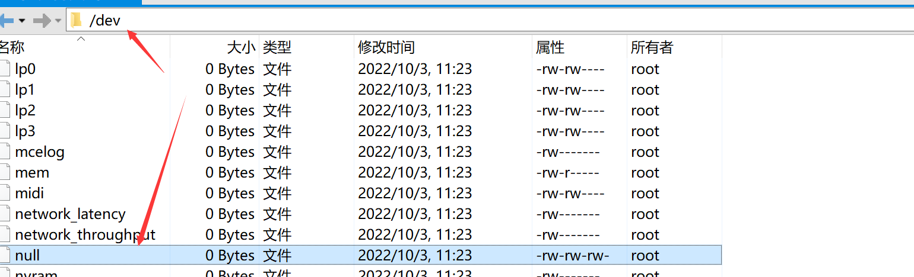
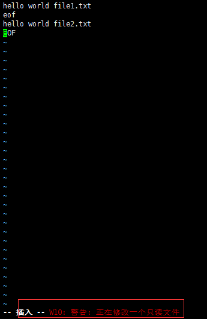
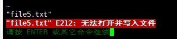
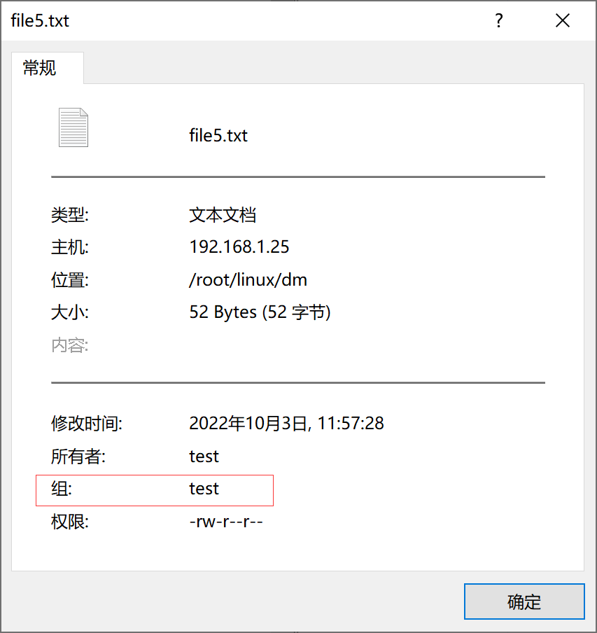
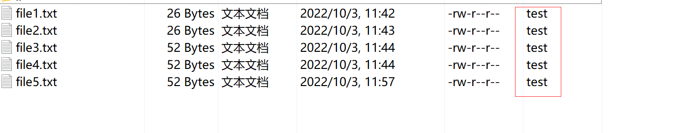
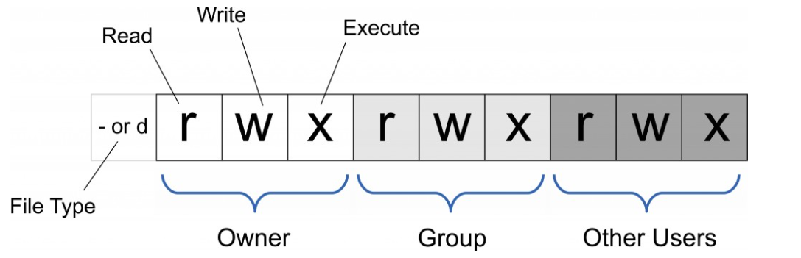
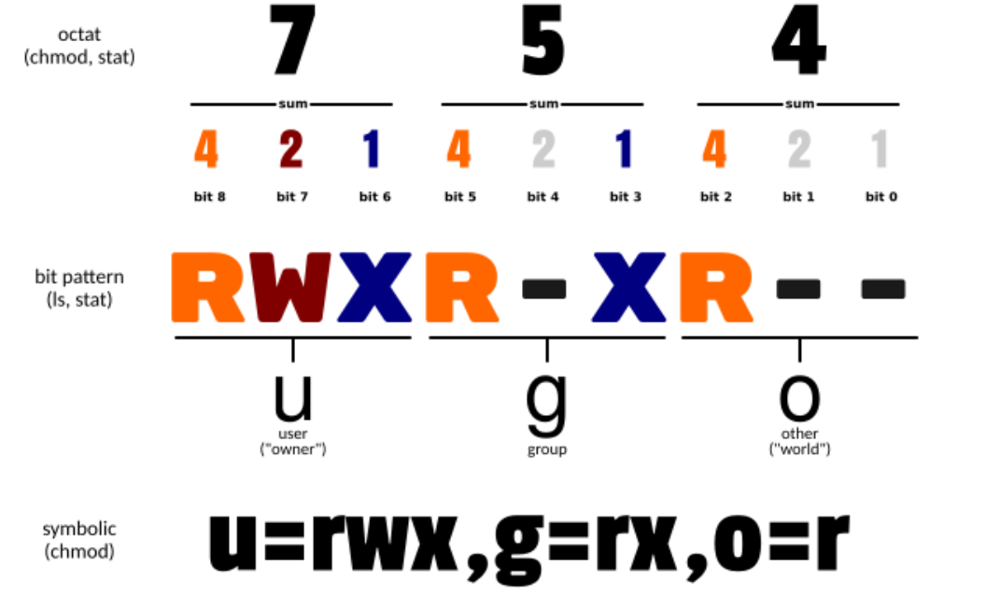

1.文件管理 1.1 cat
cat（concatenate）命令用于连接文件并打印到标准输出设备上
语法格式
选项
-A, –show-all：显示所有内容，包括换行符；
-b, –number-nonblank：对非空输出行编号，使 -n 失效；
-e： 等价于 -vE；
-E, –show-ends：在每行结束处显示 $；
-n, –number：对输出的所有行编号；
-s, –squeeze-blank：将所有的连续的多个空行替换为一个空行；
-t, -T, –show-tabs：将 TAB 字符显示为 ^I；
-v, –show-nonprinting：除了 LFD 和 TAB 之外的不可打印字符，用 ^ 和 M- 标记方式显示；
常用用法
1 cat 文件1 文件2 .. 文件n > 新文件
举例
1 2 3 4 5 6 7 8 9 10 11 12 13 14 15 16 17 18 19 20 21 22 23 24 25 26 27 28 29 30 31 32 33 34 35 36 37 38 39 40 41 42 43 [root@localhost dm] [root@localhost dm] > hello world file1.txt > eof > EOF [root@localhost dm] file1.txt [root@localhost dm] > hello world file2.txt > EOF > eof [root@localhost dm] file1.txt file2.txt [root@localhost dm] hello world file1.txt eof [root@localhost dm] hello world file2.txt EOF [root@localhost dm] hello world file1.txt eof hello world file2.txt EOF [root@localhost dm] [root@localhost dm] file1.txt file2.txt file3.txt [root@localhost dm] hello world file1.txt eof hello world file2.txt EOF [root@localhost dm] > hello world file4.txt > eof [root@localhost dm] hello world file1.txt eof hello world file2.txt EOF [root@localhost dm] file1.txt file2.txt file3.txt file4.txt [root@localhost dm]
1 2 3 4 5 6 7 8 [root@localhost dm] [root@localhost dm] hello world file1.txt eof hello world file2.txt EOF [root@localhost dm] file1.txt file2.txt file3.txt file4.txt file5.txt
补充

dev/null ：在类 Unix 系统中，/dev/null 称空设备，是一个特殊的设备文件，它丢弃一切写入其中的数据（但报告写入操作成功 ），读取它则会立即得到一个 EOF。
1 2 3 [root@localhost dm] [root@localhost dm] 0
而使用 cat $filename > /dev/null 则不会得到任何信息，因为我们将本来该通过标准输出显示的文件信息重定向到了 /dev/null 中。
1 2 [root@localhost dm] [root@localhost dm]
一般标准输出和标准错误输出都是屏幕，因此错误信息还是会在屏幕上输出。
使用 cat $filename 1 > /dev/null 也会得到同样的效果，因为默认重定向的 1 就是标准输出。 如果你对 shell 脚本或者重定向比较熟悉的话，应该会联想到 2 ，也即标准错误输出。
1 2 3 4 5 6 7 0：表示标准输入流（stdin）， 1：表示标准输出（stdout）。 2：表示标准错误输出（stderr） 2>&1:表示标准错误输出重定向等同于标准输出,因为之前标准输出已经重定向到了空设备文件,所以标准错误输出也重定向到空设备文件。
1 2 3 4 5 6 7 8 9 10 11 [root@localhost dm] cat : 1: 没有那个文件或目录[root@localhost dm] cat : 2: 没有那个文件或目录[root@localhost dm] file1.txt file2.txt file3.txt file4.txt file5.txt [root@localhost dm] hello world file1.txt eof hello world file2.txt EO
1.2 chattr
chattr命令用于改变文件属性
可改变存放在ext2文件系统上的文件或目录属性
ext2文件系统：EXT2 第二代扩展文件
系统 （英语：second extended filesystem，缩写为 ext2 ），是LINUX内核所用的文件系统
语法格式
1 2 3 chattr [选项] [+/-/=<属性>] 文件名或目录名 chattr [-RVf] [-+=aAcCdDeijsStTu] [-v version] files
属性
a：让文件或目录仅供附加用途
A：最后修改时间不被记录
c：允许这个文件能被内核自动压缩/解压
C：
d：将文件或目录排除在倾倒操作之外，在进行文件系统备份时，dump程序将忽略这个文件
D：同步目录更新
e：文件使用扩展区来映射到磁盘
i：不得任意更动文件或目录
j：
s：保密性删除文件或目录
S：即时更新文件或目录
t：
T：目录层次结构顶部
u：预防意外删除
lsattr：显示特殊属性
选项
-R 递归处理，将指定目录下的所有文件及子目录一并处理
-v<版本编号> 设置文件或目录版本
-V 显示指令执行过程
-f 跳过错误信息
常用用法
1 2 3 4 [root@localhost dm] [root@localhost dm] [root@localhost dm] ----i----------- file5.txt


1 2 3 4 5 6 [root@localhost dm] chattr 1.42.9 (28-Dec-2013) file5.txt的标志被设为 ----i----------- [root@localhost dm] chattr 1.42.9 (28-Dec-2013) file5.txt的标志被设为 ----------------
让某个文件只能往里面追加数据，但不能删除，适用于各种日志文件
1 2 3 [root@localhost dm] chattr 1.42.9 (28-Dec-2013) file5.txt的标志被设为 ----ia----------
1 2 3 4 [root@localhost dm] chattr 1.42.9 (28-Dec-2013) file5.txt的标志被设为 ---------------- Version of file5.txt set as 2
1.3 chown
chown（英文全拼：change owner ）命令用于设置文件所有者和文件关联组的命令
Linux/Unix 是多人多工操作系统，所有的文件皆有拥有者。利用 chown 将指定文件的拥有者改为指定的用户或组，用户可以是用户名或者用户 ID，组可以是组名或者组 ID，文件是以空格分开的要改变权限的文件列表，支持通配符
chown 需要超级用户 root 的权限才能执行此命令。
只有超级用户和属于组的文件所有者才能变更文件关联组。非超级用户如需要设置关联组可能需要使用 chgrp 命令。
使用权限 : root
语法格式
1 2 3 chown [选项]... [user][:[group]] 文件...chown [选项]... --reference=参考文件 文件...
选项
user : 新的文件拥有者的使用者 ID
group : 新的文件拥有者的使用者组(group)
-c : 显示更改的部分的信息
-f : 忽略错误信息，抑制大多数错误消息
-h :修复符号链接 -v : 显示详细的处理信息，为每个已处理的文件输出诊断
-R : 处理指定目录以及其子目录下的所有文件（递归操作文件和目录）
–help : 显示辅助说明
–version : 显示版本
常用用法
1 2 3 4 5 6 7 8 9 10 11 12 13 14 15 16 [root@localhost dm] [root@localhost dm] 更改用户 test 的密码 。 passwd：所有的身份验证令牌已经成功更新。 [root@localhost dm] gdm:x:42: gnome-initial-setup:x:982: stapusr:x:156: stapsys:x:157: stapdev:x:158: tcpdump:x:72: avahi:x:70: slocate:x:21: mysql:x:27: test :x:1000:[root@localhost dm]

将当前前目录下的所有文件与子目录的拥有者皆设为test，群体的使用者 test

举例
1 2 [root@localhost dm]# chown -v test:test file5.txt changed ownership of "file5.txt" from root:root to test:test
1 2 [root@localhost dm] changed ownership of "file5.txt" from test :test to root:root
1 2 3 4 [root@localhost dm] [root@localhost dm] chown : 无法访问"fil.txt" : 没有那个文件或目录无法更改"fil.txt" 的所有者为test :test
1 2 3 4 5 6 7 8 9 10 11 12 [root@localhost dm] changed ownership of "file5.txt" from root:root to root:test changed ownership of "file1.txt" from root:root to root:test changed ownership of "file2.txt" from root:root to root:test [root@localhost dm] "file5.txt" 的所有者已保留为root:test "file1.txt" 的所有者已保留为root:test "file2.txt" 的所有者已保留为root:test [root@localhost dm] changed ownership of "file5.txt" from root:test to root:root changed ownership of "file1.txt" from root:test to root:root changed ownership of "file2.txt" from root:test to root:root
1.4 chmod
1 2 3 4 5 6 7 8 9 10 [root@localhost dm] 总用量 20 -rw-r--r--. 1 root root 26 10月 3 11:42 file1.txt -rw-r--r--. 1 root root 26 10月 3 11:43 file2.txt -rw-r--r--. 1 root root 52 10月 3 11:44 file3.txt -rw-r--r--. 1 root root 52 10月 3 11:44 file4.txt -rw-r--r--. 1 root root 52 10月 3 11:57 file5.txt [root@localhost dm] -rw-r--r--. 1 root root 52 10月 3 11:57 file5.txt

只有文件所有者和超级用户(root)可以修改文件或目录的权限。可以使用绝对模式（八进制数字模式），符号模式指定文件的权限

语法格式
1 2 3 4 chmod [选项]... 模式[,模式]... 文件...chmod [选项]... 八进制模式 文件...chmod [选项]... --reference=参考文件 文件...chmod [-cfvR] [--help ] [--version] mode file...
选项
-c : 若该文件权限确实已经更改，才显示其更改动作
-f : 若该文件权限无法被更改也不要显示错误讯息
-v : 显示权限变更的详细资料
-R : 对目前目录下的所有文件与子目录进行相同的权限变更(即以递归的方式逐个变更)
–help : 显示辅助说明
–version : 显示版本
模式mode
1 [ugoa...][[+-=][rwxX]...][,...]
u 表示该文件的拥有者，g 表示与该文件的拥有者属于同一个群体(group)者，o 表示其他以外的人，a 表示这三者皆是
+ 表示增加权限、- 表示取消权限、= 表示唯一设定权限
r 表示可读取，w 表示可写入，x 表示可执行，X 表示只有当该文件是个子目录或者该文件已经被设定过为可执行
符号模式
使用符号模式可以设置多个项目 ：who（用户类型），operator（操作符）和 permission（权限），每个项目的设置可以用逗号隔开 。 命令 chmod 将修改 who 指定的用户类型对文件的访问权限，用户类型由一个或者多个字母在 who 的位置来说明，如 who 的符号模式表所示:
who
用户类型
说明
uuser
文件所有者
ggroup
文件所有者所在组
oothers
所有其他用户
aall
所有用户, 相当于 ugo
operator 的符号模式表:
Operator
说明
+为指定的用户类型增加权限
-去除指定用户类型的权限
=设置指定用户权限的设置，即将用户类型的所有权限重新设置
permission 的符号模式表:
模式
名字
说明
r读
设置为可读权限
w写
设置为可写权限
x执行权限
设置为可执行权限
X特殊执行权限
只有当文件为目录文件，或者其他类型的用户有可执行权限时，才将文件权限设置可执行
ssetuid/gid
当文件被执行时，根据who参数指定的用户类型设置文件的setuid或者setgid权限
t粘贴位
设置粘贴位，只有超级用户可以设置该位，只有文件所有者u可以使用该位
八进制模式
chmod命令可以使用八进制数来指定权限。文件或目录的权限位是由9个权限位来控制，每三位为一组，它们分别是文件所有者（User）的读、写、执行，用户组（Group）的读、写、执行以及其它用户（Other）的读、写、执行。历史上，文件权限被放在一个比特掩码中，掩码中指定的比特位设为1，用来说明一个类具有相应的优先级
八进制
权限
rwx
二进制
7
读 + 写 + 执行
rwx
111
6
读 + 写
rw-
110
5
读 + 执行
r-x
101
4
只读
r–
100
3
写 + 执行
-wx
011
2
只写
-w-
010
1
只执行
–x
001
0
无
—
000
常用用法
将文件 file1.txt 设为所有人皆可读取 :
将文件 file1.txt 设为所有人皆可读取 :
将文件 file1.txt 与 file2.txt 设为该文件拥有者，与其所属同一个群体者可写入，但其他以外的人则不可写入 :
1 chmod ug+w,o-w file1.txt file2.txt
为 ex1.py 文件拥有者增加可执行权限:
将目前目录下的所有文件与子目录皆设为任何人可读取 :
此外chmod也可以用数字来表示权限如 :
语法为：
其中a,b,c各为一个数字，分别表示User、Group、及Other的权限。
r=4，w=2，x=1
若要 rwx 属性则 4+2+1=7；
若要 rw- 属性则 4+2=6；
若要 r-x 属性则 4+1=5。
和
效果相同
和
1.5 file
语法格式
选项
–help：查看帮助文档
-v：显示版本信息
-m：-m<魔法数字文件> 指定魔法数字文件
-z：尝试去解读压缩文件的内容
-b：列出辨识结果时，不将文件名添加到输出行
-c：详细显示指令执行过程，便于排错或分析程序执行的情形
-e
-f：-f<名称文件> 指定名称文件，其内容有一个或多个文件名称时，让file依序辨识这些文件，格式为每列一个文件名称
-F：设置输出分隔符
-i：输出文件的类型的字符串
text/plain 普通文本
text/html HTML文本
application/pdf PDF文档
application/msword Word文档
image/png PNG图片
mage/jpeg JPEG图片
application/x-tar TAR文件
application/x-gzip GZIP文件
inode/x-empty 空文本
-k
-l
-L：在符号链接后取消引用(默认)，直接显示符号连接所指向的文件的类别
-h：取消引用不跟随符号链接
-n：不缓冲输出
-N：不焊盘输出
-0：使用ASCII NUL终止文件名
-p：保留对文件的访问时间
-r
-s
-C：由-m指定的编译文件
-d：打印调试消息
常用用法
1 2 3 4 [root@localhost dm] file5.txt: ASCII text [root@localhost dm] ASCII text
1 2 [root@localhost dm] file5.txt: text/plain; charset=us-ascii
1 2 3 4 [root@localhost dm] file5.txt: ASCII text [root@localhost dm] file5.txt| ASCII text
1.6 rm
rm（remove）命令用于删除一个文件或者目录
文件一旦通过rm命令删除，则无法恢复，所以必须格外小心地使用该命令
语法格式
选项
-d：删除空目录
-f：强制删除文件或目录（没有提示）；即使原档案属性设为唯读，亦直接删除，无需逐一确认
-i：删除已有文件或目录之前先询问用户（默认设置）
-I：在删除三个以上的文件之前提示一次，或者递归删除时
-r：递归处理，将指定目录下的所有文件与子目录一并处理（删除目录必须要加）
-R：递归处理，将指定目录下的所有文件与子目录一并处理（删除目录必须要加）
-v：显示指令的详细执行过程
–help：显示此帮助信息并退出
–version：显示版本信息并退出
常用用法
1 2 3 4 5 6 7 8 9 [root@localhost dm] [root@localhost dm] file1.txt file2.txt file3.txt file4.txt file5.txt tmp [root@localhost dm] rm : 无法删除"/root/linux/dm" : 目录非空[root@localhost dm] rm ：是否删除目录 "/root/linux/dm/tmp" ？y[root@localhost dm] file1.txt file2.txt file3.txt file4.txt file5.txt
1 2 3 4 5 6 7 8 9 10 11 12 13 14 [root@localhost dm] [root@localhost dm] file1.txt file2.txt file3.txt file4.txt file5.txt tmp [root@localhost dm] [root@localhost tmp] [root@localhost tmp] tmp_1 [root@localhost tmp] [root@localhost tmp] [root@localhost tmp] cd : 获取当前目录时出错: getcwd: 无法访问父目录: 没有那个文件或目录[root@localhost ] [root@localhost dm] file1.txt file2.txt file3.txt file4.txt file5.txt
1 2 3 4 5 6 7 8 9 10 11 12 13 14 15 [root@localhost dm] [root@localhost dm] [root@localhost dm] 已删除目录："/root/linux/dm/tmp" [root@localhost dm] [root@localhost dm] file1.txt file2.txt file3.txt file4.txt file5.txt tmp [root@localhost dm] [root@localhost dm] file1.txt file2.txt file3.txt file4.txt file5.txt tmp [root@localhost dm] rm : 无法删除"/root/linux/dm/tmp" : 是一个目录[root@localhost dm] 已删除目录："/root/linux/dm/tmp/tmp_1" 已删除目录："/root/linux/dm/tmp"
1 2 3 4 5 6 [root@localhost dm] [root@localhost dm] rm : 无法删除"/root/linux/dm/tmp" : 是一个目录[root@localhost dm] [root@localhost dm] file1.txt file2.txt file3.txt file4.txt file5.txt
1.7 touch
touch命令用于修改文件或者目录的时间属性，包括存取时间和更改时间。若文件不存在，系统会建立一个新的文件
ls -l 可以显示档案的时间记录
语法格式
选项
-a：只更改访问时间
-m：只更改修改时间
-c：不创建任何文件，与 –no-create 的效果一样
-f：f 不使用，是为了与其他 unix 系统的相容性而保留(忽略 )
-r：使用参考文件的时间记录作为指定文件的时间，与 –file 的效果一样
-d：使用指定字符串表示时间而非当前时间
-t：设定时间而不用目前的时间，格式为[YYYYMMDDhhmm]
–help：显示此帮助信息并退出
–version：显示版本信息并退出
常用用法
1 2 3 4 5 6 7 8 9 10 11 12 13 14 15 [root@localhost dm] [root@localhost dm] -rw-r--r--. 1 root root 52 10月 5 18:21 file5.txt [root@localhost dm] 文件："file5.txt" 大小：52 块：8 IO 块：4096 普通文件 设备：fd00h/64768d Inode：35672289 硬链接：1 权限：(0644/-rw-r--r--) Uid：( 0/ root) Gid：( 0/ root) 环境：unconfined_u:object_r:admin_home_t:s0 最近访问：2022-10-05 18:21:08.763351997 +0800 最近更改：2022-10-05 18:21:08.763351997 +0800 最近改动：2022-10-05 18:21:08.763351997 +0800 创建时间：-
1 2 3 4 5 6 7 8 9 10 11 12 13 14 15 16 17 18 19 20 21 22 [root@localhost dm] [root@localhost dm] 文件："file5.txt" 大小：52 块：8 IO 块：4096 普通文件 设备：fd00h/64768d Inode：35672289 硬链接：1 权限：(0644/-rw-r--r--) Uid：( 0/ root) Gid：( 0/ root) 环境：unconfined_u:object_r:admin_home_t:s0 最近访问：2022-10-05 18:23:55.269427622 +0800 最近更改：2022-10-05 18:21:08.763351997 +0800 最近改动：2022-10-05 18:23:55.269427622 +0800 创建时间：- [root@localhost dm] [root@localhost dm] 文件："file5.txt" 大小：52 块：8 IO 块：4096 普通文件 设备：fd00h/64768d Inode：35672289 硬链接：1 权限：(0644/-rw-r--r--) Uid：( 0/ root) Gid：( 0/ root) 环境：unconfined_u:object_r:admin_home_t:s0 最近访问：2022-10-05 18:23:55.269427622 +0800 最近更改：2022-10-05 18:24:05.913496382 +0800 最近改动：2022-10-05 18:24:05.913496382 +0800 创建时间：
1 2 3 4 5 6 7 8 9 10 11 [root@localhost dm] [root@localhost dm] 文件："file5.txt" 大小：52 块：8 IO 块：4096 普通文件 设备：fd00h/64768d Inode：35672289 硬链接：1 权限：(0644/-rw-r--r--) Uid：( 0/ root) Gid：( 0/ root) 环境：unconfined_u:object_r:admin_home_t:s0 最近访问：1998-06-01 10:10:00.000000000 +0800 最近更改：1998-06-01 10:10:00.000000000 +0800 最近改动：2022-10-05 18:26:40.079492291 +0800 创建时间：-
1 2 3 4 5 6 7 8 9 10 11 12 13 14 15 16 17 [root@localhost dm] file1.txt file2.txt file3.txt file4.txt file5.txt [root@localhost dm] [root@localhost dm] file1.txt file2.txt file3.txt file4.txt file5.txt file6.txt [root@localhost dm] 总用量 20 -rw-r--r--. 1 root root 26 10月 3 11:42 file1.txt -rw-r--r--. 1 root root 26 10月 3 11:43 file2.txt -rw-r--r--. 1 root root 52 10月 3 11:44 file3.txt -rw-r--r--. 1 root root 52 10月 3 11:44 file4.txt -rw-r--r--. 1 root root 52 10月 5 18:12 file5.txt -rw-r--r--. 1 root root 0 10月 5 18:14 file6.txt [root@localhost dm] file6.txt: empty [root@localhost dm] file6.txt: inode/x-empty; charset=binary
1 2 3 4 5 6 7 [root@localhost dm] [root@localhost dm] file1.txt file3.txt file5.txt test10.txt test12.txt test14.txt test16.txt test18.txt test1.txt test2.txt test4.txt test6.txt test8.txt file2.txt file4.txt file6.txt test11.txt test13.txt test15.txt test17.txt test19.txt test20.txt test3.txt test5.txt test7.txt test9.txt [root@localhost dm] [root@localhost dm] file1.txt file2.txt file3.txt file4.txt file5.txt file6.txt
1.8 cp
cp（copy file）命令主要用于复制文件或目录
语法格式
1 2 3 4 cp [选项]... [-T] 源文件 目标文件cp [选项]... 源文件... 目录cp [选项]... -t 目录 源文件...
选项
-a：此选项通常在复制目录时使用，它保留链接、文件属性，并复制目录下的所有内容。其作用等于dpR参数组合
-b：
-d：复制时保留链接。这里所说的链接相当于 Windows 系统中的快捷方式
-f：覆盖已经存在的目标文件而不给出提示
-i：与 -f 选项相反，在覆盖目标文件之前给出提示，要求用户确认是否覆盖，回答 y 时目标文件将被覆盖
-H：在源文件中遵循命令行符号链接
-l：不复制文件，只是生成链接文件
-L：始终遵循源文件中的符号链接
-n：不要覆盖已存在的文件(使前面的 -i 选项失效)
-P：不跟随源文件中的符号链接
-p：除复制文件的内容外，还把修改时间和访问权限也复制到新文件中
-c
-r：（-R）若给出的源文件是一个目录文件，此时将复制该目录下所有的子目录和文件
-s：只创建符号链接而不复制文件
-S：自行指定备份文件的后缀
-t：将所有参数指定的源文件/目录复制至目标目录
-T：将目标目录视作普通文件
-u：只在源文件比目标文件新，或目标文件不存在时才进行复制
-v：显示详细的进行步骤
-x：不跨越文件系统进行操作
-Z
–help：显示此帮助信息并退出
–version：显示版本信息并退出
常用用法
1 2 3 4 5 6 7 8 9 10 11 12 [root@localhost linux] dm [root@localhost linux] [root@localhost linux] dm dm1 [root@localhost linux] [root@localhost linux] [root@localhost dm1] dm [root@localhost dm1] [root@localhost dm] file1.txt file2.txt file3.txt file4.txt file5.txt file6.txt
1 2 3 4 5 6 7 8 9 10 11 12 13 14 15 16 17 18 19 20 21 22 23 24 25 26 27 [root@localhost linux] dm [root@localhost linux] [root@localhost linux] "dm/" -> "dm1/dm" "dm/file1.txt" -> "dm1/dm/file1.txt" "dm/file2.txt" -> "dm1/dm/file2.txt" "dm/file3.txt" -> "dm1/dm/file3.txt" "dm/file4.txt" -> "dm1/dm/file4.txt" "dm/file5.txt" -> "dm1/dm/file5.txt" "dm/.file5.txt.swp" -> "dm1/dm/.file5.txt.swp" "dm/file6.txt" -> "dm1/dm/file6.txt" [root@localhost linux] cp ：是否覆盖"dm1/dm/file1.txt" ？ y"dm/file1.txt" -> "dm1/dm/file1.txt" cp ：是否覆盖"dm1/dm/file2.txt" ？ y"dm/file2.txt" -> "dm1/dm/file2.txt" cp ：是否覆盖"dm1/dm/file3.txt" ？ y"dm/file3.txt" -> "dm1/dm/file3.txt" cp ：是否覆盖"dm1/dm/file4.txt" ？ y"dm/file4.txt" -> "dm1/dm/file4.txt" cp ：是否覆盖"dm1/dm/file5.txt" ？ y"dm/file5.txt" -> "dm1/dm/file5.txt" cp ：是否覆盖"dm1/dm/.file5.txt.swp" ？ y"dm/.file5.txt.swp" -> "dm1/dm/.file5.txt.swp" cp ：是否覆盖"dm1/dm/file6.txt" ？ y"dm/file6.txt" -> "dm1/dm/file6.txt"
1.9 mcopy
mcopy命令用来复制 MS-DOS （微软磁盘操作系统）格式文件到 Linux 中，或是由 Linux 中复制 MS-DOS 文件到磁片上
mcopy 可复制单一的文件到所指定的文件名称，或是复制数个文件到所指定的目录之中。来源与目的文件可为 MS-DOS 或是 Linux 文件
mcopy指令是一种mtools工具指令，可以在DOS系统中复制文件或者在DOS与Linux操作系统之间进行文件复制
mcopy会MS-DOS磁盘驱动器代号 出现的位置来判断如何复制文件
语法格式
1 2 3 mcopy [-spatnmQVBT] [-D clash_option] sourcefile targetfile mcopy [-spatnmQVBT] [-D clash_option] sourcefile [sourcefiles...] targetdirectory mcopy [-bnmpQt/][源文件][目标文件或目录]
选项
-s
-p
-a
-t：转换为文本文件
-n：覆盖其他文件时，不需要进行确认而直接覆盖
-m：将源文件修改时间设置为目标文件的修改时间
-Q：当复制多个文件产生错误时，尽快结束程序
-V
-B
-T
-b：批处理模式。这是为大量的文件复制进行最佳化的选项,但是当在复制文件过程中产生 crash 时，会有安全性的问题产生。/ 递回的复制。包含目录所含文件与其下所有子目录中的文件
-o：在覆盖 MS-DOS 文件时不会出现警示讯息
常用用法
将 A 盘根目录中的 autoexec.bat 复制到目前工作目录之下：
当复制的内容包括子目录和文件时，必须使用参数”-/“递归操作，因此该命令为：
1.10 scp
语法格式
1 2 3 4 5 scp [-12346BCpqrv] [-c cipher] [-F ssh_config] [-i identity_file] scp [-l limit ] [-o ssh_option] [-P port] [-S program] scp [[user@]host1:]file1 ... [[user@]host2:]file2 scp [可选参数] file_source file_target
选项
-1： 强制scp命令使用协议ssh1
-2： 强制scp命令使用协议ssh2
-4： 强制scp命令只使用IPv4寻址
-6： 强制scp命令只使用IPv6寻址
-B： 使用批处理模式（传输过程中不询问传输口令或短语）
-C： 允许压缩。（将-C标志传递给ssh，从而打开压缩功能）
-p：保留原文件的修改时间，访问时间和访问权限。
-q： 不显示传输进度条。
-r： 递归复制整个目录。
-v：详细方式显示输出。scp和ssh(1)会显示出整个过程的调试信息。这些信息用于调试连接，验证和配置问题。
-c cipher： 以cipher将数据传输进行加密，这个选项将直接传递给ssh。
-F ssh_config： 指定一个替代的ssh配置文件，此参数直接传递给ssh。
-i identity_file： 从指定文件中读取传输时使用的密钥文件，此参数直接传递给ssh。
-l limit： 限定用户所能使用的带宽，以Kbit/s为单位。
-o ssh_option： 如果习惯于使用ssh_config(5)中的参数传递方式，
-P port：注意是大写的P, port是指定数据传输用到的端口号
-S program： 指定加密传输时所使用的程序。此程序必须能够理解ssh(1)的选项。
常用用法
1.11 rcp
语法格式
1 rcp [-pr ][源文件或目录][目标文件或目录]
或
1 rcp [-pr ][源文件或目录...][目标文件]
选项
常用用法
1.12 awk
awk是一种处理文本文件的语言，是一个强大的文本分析工具
语法格式
1.13 read
语法格式
1 2 3 read [-ers] [-a 数组] [-d 分隔符] [-i 缓冲区文字] [-n 读取字符数] [-N 读取字符数] [-p 提示符] [-t 超时] [-u 文件描述符] [名称 ...]read [-ers] [-a aname] [-d delim] [-i text] [-n nchars] [-N nchars] [-p prompt] [-t timeout ] [-u fd] [name ...]
-a：将读到的所有字段依次存到 aname 数组中，索引从 0 开始
-d：将 delim 指定为读取结束符号，取代换行符；其实只有其后的第一个字符有用
-p：后面跟提示信息，即在输入前打印提示信息；打印 prompt 且不使用换行符
-e：在输入的时候可以使用命令补全功能
-n 后跟一个数字，定义输入文本的长度，很实用
-r 屏蔽\，如果没有该选项，则\作为一个转义字符，有的话 \就是个正常的字符了
-s 安静模式，在输入字符时不再屏幕上显示，例如login时输入密码
-t 后面跟秒数，定义输入字符的等待时间
-u 后面跟fd，从文件描述符中读入，该文件描述符可以是exec新开启的
-i：将 text 作为 readline 的起始数据
常用用法
1 2 3 4 5 6 7 8 9 10 11 12 13 14 15 16 [root@localhost ~] 123 [root@localhost ~] 123 [root@localhost ~] [root@localhost ~] [root@localhost ~] 1 2 3 [root@localhost ~] 1 [root@localhost ~] 2 [root@localhost ~] 3
1 2 3 4 5 6 7 8 9 10 11 12 13 14 [root@localhost ~] eee ggg hhh ggg jjj kkk [root@localhost ~] eee[0] [root@localhost ~] eee [root@localhost ~] ggg [root@localhost ~] ggg [root@localhost ~] [root@localhost ~] kkk
1 2 3 4 5 6 7 8 [root@localhost ~] 123/[root@localhost ~] 123 [root@localhost ~] 123 387 989/[root@localhost ~] 123 387 989
1 2 3 4 [root@localhost ~] 请输入用户名:yty [root@localhost ~] yty
1 2 3 4 [root@localhost ~] 请输入密码:[root@localhost ~] [root@localhost ~] 000000
最多读取5个字符，不到5个字符时的换行符会终止读取
1 2 3 4 5 6 7 [root@localhost ~] 12345[root@localhost ~] 12345 [root@localhost ~] 12 [root@localhost ~] 12
最多读取5个字符，不到5个字符时的换行符不会终止读取
1 2 3 4 5 6 7 [root@localhost ~] 12 22[root@localhost ~] 12 22 [root@localhost ~] 12345[root@localhost ~] 12345
1 2 3 4 5 [root@localhost ~] [root@localhost ~] 5 [root@localhost ~] 5
1.14 which
which命令可以查看可执行文件的位置（可执行文件：可以由操作系统进行加载执行的文件）
which指令会在环境变量$PATH设置的目录里查找符合条件的文件
语法格式
选项
-a：打印路径中的所有匹配项，而不仅仅是第一个
–skip-dot 跳过以点开头的目录
–skip-tilde 跳过以波浪号开头的目录
-[vV] 显示版本信息
–help 查看帮助信息
常用用法
1 2 [root@localhost ~] /usr/bin/bash
1 2 3 4 5 [root@localhost ~] GNU which v2.20, Copyright (C) 1999 - 2008 Carlo Wood. GNU which comes with ABSOLUTELY NO WARRANTY; This program is free software; your freedom to use, change and distribute this program is protected by the GPL.
1.15 mv
mv（move file）命令用来为文件或目录改名、或将文件或目录移入其它位置
语法格式
1 2 3 mv [选项]... [-T] 源文件 目标文件mv [选项]... 源文件... 目录mv [选项]... -t 目录 源文件...
选项
-b：为每个已存在的目标文件创建备份
-i：如果指定移动的源目录或文件与目标的目录或文件同名，则会先询问是否覆盖旧文件，输入 y 表示直接覆盖，输入 n 表示取消该操作
-f：如果指定移动的源目录或文件与目标的目录或文件同名，不会询问，直接覆盖旧文件
-n：不要覆盖任何已存在的文件或目录
-i、-f、-n 中的多个，仅最后一个生效
-S：替换常用的备份文件后缀
-t：将所有源文件移动到目录中
-T：将目标文件视为普通文件
-u：当源文件比目标文件新或者目标文件不存在时，才执行移动操作
-v：解释目录的执行过程
-Z
–help：显示此帮助信息并退出
–version：显示版本信息并退出
mv 参数设置与运行结果：
命令格式
运行结果
mv source_file(文件) dest_file(文件)将源文件名 source_file 改为目标文件名 dest_file
mv source_file(文件) dest_directory(目录)将文件 source_file 移动到目标目录 dest_directory 中
mv source_directory(目录) dest_directory(目录)目录名 dest_directory 已存在，将 source_directory 移动到目录名 dest_directory 中；目录名 dest_directory 不存在则 source_directory 改名为目录名 dest_directory
mv source_directory(目录) dest_file(文件)出错
常用用法
1 2 3 4 5 6 7 [root@localhost dm] file1.txt file2.txt file3.txt file4.txt file5.txt file6.txt [root@localhost dm] mv : 无法获取"file5" 的文件状态(stat ): 没有那个文件或目录[root@localhost dm] [root@localhost dm] file1.txt file2.txt file3.txt file4.txt file5_1.txt file6.txt
1.16 cut
语法格式
如果不指定 文件参数，cut 命令将读取标准输入。必须指定 -b、-c 或 -f 标志之一
选项
-b：只选中指定的这些字节
-c：只选中指定的这些字符
-d：使用指定分界符代替制表符作为区域分界
-f：与-d一起使用，指定显示哪个区域
-n：取消分割多字节字符。仅和 -b 标志一起使用。如果字符的最后一个字节落在由 -b 标志的 List 参数指示的
-s：不打印没有包含分界符的行
–help：显示此帮助信息并退出
–version：显示版本信息并退出
常用用法
1.17 lsattr
lsattr命令用于显示文件属性
用chattr执行改变文件或目录的属性，可执行lsattr指令查询其属性
语法格式
1 lsattr [-adlRvV][文件或目录...]
选项
-a：显示所有文件和目录，包括以”.”为名称开头字符的额外内建，现行目录”.”与上层目录”..”
-d：显示，目录名称，而非其内容
-l：此参数目前没有任何作用
-R：递归处理，将指定目录下的所有文件及子目录一并处理
-v：显示文件或目录版本
-V：显示版本信息
常用用法
1 2 [root@localhost dm] ---------------- file4.txt
1.17 find
find 命令用来在指定目录下查找文件。任何位于参数之前的字符串都将被视为欲查找的目录名。如果使用该命令时，不设置任何参数，则 find 命令将在当前目录下查找子目录与文件。并且将查找到的子目录和文件全部进行显示
语法格式
1 2 3 4 5 6 7 find [-H] [-L] [-P] [-Olevel] [-D help |tree|search|stat |rates|opt|exec ] [path...] [expression find [路径] [选项] [行动] 默认路径为当前目录；默认表达式为 -print find path -option [-print ][-exec -ok | xargs |grep][command {} \;]
1）path：要查找的目录路径
1 2 3 ~ 表示$HOME 目录 . 表示当前目录 / 表示根目录
2）print：表示将结果输出到标准输出
3）exec：对匹配的文件执行该参数所给出的shell命令。
4）ok：与exec作用相同，
5）xargs 与exec作用相同 ，起承接作用
区别在于 xargs 主要用于承接删除操作 ，而 -exec 都可用 如复制、移动、重命名等
6）options ：表示查找方式(选项)
-exec command
对查找到的文件执行command命令
-ok command
执行命令前需要进行确认
选项
-name name, -iname name：文件名称符合 name 的文件。iname 会忽略大小写
-perm：按执行权限来查找
-user username：按文件属主来查找
-group groupname：按组来查找
-mtime -n +n：按文件更改时间来查找文件，-n指n天以内，+n指n天以前
-atime -n +n：按文件访问时间来查找文件，-n指n天以内，+n指n天以前
-ctime -n +n：按文件创建时间来查找文件，-n指n天以内，+n指n天以前
-nogroup：查无有效属组的文件，即文件的属组在/etc/groups中不存在
-nouser：查无有效属主的文件，即文件的属主在/etc/passwd中不存
-type b/d/c/p/l/f：查是块设备、目录、字符设备、管道、符号链接、普通文件
-size n：文件大小 是 n 单位，b 代表 512 位元组的区块，c 表示字元数，k 表示 kilo bytes，w 是二个位元组
-mount, -xdev：只检查和指定目录在同一个文件系统下的文件，避免列出其它文件系统中的文件
-follow：如果遇到符号链接文件，就跟踪链接所指的文件
-prune：忽略某个目录
-amin n：在过去 n 分钟内被读取过
-anewer file：比文件 file 更晚被读取过的文件
-cmin n：在过去 n 分钟内被修改过
-cnewer file：比文件 file 更新的文件
-empty：空的文件-gid n or -group name
-ipath p, -path p：路径名称符合 p 的文件，ipath 会忽略大小写
-pid n : process id 是 n 的文件
-depth：指定查找目录深度
-maxdepth：指定查找目录最大深度
-mindepth：指定查找目录最小深度
-version：查看版本
-help：获取帮助
多条件组合参数
参数
参数说明
-o
是或者的意思
-a
是而且的意思
-not
是相反的意思
常用用法
在当前目录及子目录中，查找大写字母开头的txt文件
1 2 3 4 5 6 7 8 9 10 11 12 13 14 [root@localhost dm] ./file1.txt ./file2.txt ./file3.txt ./file4.txt ./file6.txt ./file5_1.txt [root@localhost dm] ./file1.txt ./file2.txt ./file3.txt ./file4.txt ./file6.txt ./file5_1.txt
在/etc及其子目录中，查找host开头的文件
1 2 3 4 5 6 7 8 [root@localhost dm] /etc/host.conf /etc/hosts /etc/hosts.allow /etc/hosts.deny /etc/selinux/targeted/active/modules/100/hostname /etc/hostname /etc/avahi/hosts
在$HOME目录及其子目录中，查找所有文件
1 2 3 4 5 6 7 8 9 10 11 12 13 14 15 16 17 18 19 20 21 22 23 24 25 26 27 28 29 30 31 32 33 34 35 36 37 38 39 40 41 42 43 44 45 46 47 48 49 50 51 52 53 54 55 56 57 58 59 60 61 62 63 64 65 66 67 68 69 70 71 72 73 74 75 76 77 78 79 80 81 82 83 84 85 86 87 88 89 90 91 92 93 94 95 96 97 98 99 100 101 102 103 104 105 106 107 108 109 110 111 112 113 114 115 116 117 118 119 120 121 122 123 124 125 126 127 128 129 130 131 132 133 134 135 136 137 138 139 140 141 142 143 144 145 146 147 148 149 150 151 152 153 154 155 156 157 158 159 160 161 162 163 164 165 166 167 168 169 170 171 172 173 174 175 176 177 178 179 180 181 182 183 184 185 186 187 188 189 190 191 192 193 194 195 196 197 198 199 200 201 202 203 204 205 206 207 208 209 210 211 212 213 214 215 216 217 218 219 220 221 222 223 224 225 226 227 228 229 230 231 232 233 234 235 236 237 238 239 240 241 242 243 244 245 246 [root@localhost dm] /root /root/.cache /root/.cache/abrt /root/.cache/abrt/lastnotification /root/.cache/abrt/applet_dirlist /root/.cache/imsettings /root/.cache/imsettings/log.bak /root/.cache/imsettings/log /root/.cache/libgweather /root/.cache/evolution /root/.cache/evolution/addressbook /root/.cache/evolution/addressbook/trash /root/.cache/evolution/calendar /root/.cache/evolution/calendar/trash /root/.cache/evolution/mail /root/.cache/evolution/mail/trash /root/.cache/evolution/memos /root/.cache/evolution/memos/trash /root/.cache/evolution/sources /root/.cache/evolution/sources/trash /root/.cache/evolution/tasks /root/.cache/evolution/tasks/trash /root/.cache/gnome-shell /root/.cache/gnome-shell/update-check-3.28 /root/.cache/event-sound-cache.tdb.f2225aad041d4ee0b8fa349ebfc6e5c6.x86_64-redhat-linux-gnu /root/.cache/tracker /root/.cache/tracker/db-version.txt /root/.cache/tracker/meta.db /root/.cache/tracker/db-locale.txt /root/.cache/tracker/meta.db-wal /root/.cache/tracker/meta.db-shm /root/.cache/tracker/ontologies.gvdb /root/.cache/tracker/parser-sha1.txt /root/.cache/tracker/locale-for-miner-user-guides.txt /root/.cache/tracker/locale-for-miner-apps.txt /root/.cache/tracker/last-crawl.txt /root/.cache/tracker/first-index.txt /root/.cache/media-art /root/.cache/gstreamer-1.0 /root/.cache/gstreamer-1.0/registry.x86_64.bin /root/.cache/gnome-software /root/.cache/gnome-software/shell-extensions /root/.cache/gnome-software/odrs /root/.cache/yelp /root/.cache/yelp/WebKitCache /root/.cache/yelp/WebKitCache/Version 16 /root/.cache/yelp/WebKitCache/Version 16/salt /root/.cache/yelp/WebKitCache/Version 16/Blobs /root/.bash_logout /root/.bash_profile /root/.config /root/.config/abrt /root/.config/imsettings /root/.config/gnome-session /root/.config/gnome-session/saved-session /root/.config/ibus /root/.config/ibus/bus /root/.config/ibus/bus/f2225aad041d4ee0b8fa349ebfc6e5c6-unix-1 /root/.config/ibus/bus/f2225aad041d4ee0b8fa349ebfc6e5c6-unix-0 /root/.config/dconf /root/.config/dconf/user /root/.config/evolution /root/.config/evolution/sources /root/.config/evolution/sources/system-proxy.source /root/.config/goa-1.0 /root/.config/user-dirs.dirs /root/.config/user-dirs.locale /root/.config/gconf /root/.config/pulse /root/.config/pulse/f2225aad041d4ee0b8fa349ebfc6e5c6-device-volumes.tdb /root/.config/pulse/f2225aad041d4ee0b8fa349ebfc6e5c6-stream-volumes.tdb /root/.config/pulse/f2225aad041d4ee0b8fa349ebfc6e5c6-card-database.tdb /root/.config/pulse/cookie /root/.config/pulse/f2225aad041d4ee0b8fa349ebfc6e5c6-default-sink /root/.config/pulse/f2225aad041d4ee0b8fa349ebfc6e5c6-default-source /root/.config/gtk-3.0 /root/.config/gtk-3.0/bookmarks /root/.config/nautilus /root/.config/nautilus/desktop-metadata /root/.config/run-welcome-tour /root/.config/gnome-initial-setup-done /root/.config/yelp /root/.config/yelp/yelp.cfg /root/.bashrc /root/.cshrc /root/.tcshrc /root/anaconda-ks.cfg /root/.bash_history /root/.sh_history /root/shell /root/shell/day01 /root/shell/day01/first.sh /root/shell/day01/vars.sh /root/shell/day01/user.sh /root/shell/day01/pre.sh /root/shell/day01/read.sh /root/shell/day01/.info.sh.swp /root/shell/day01/info.sh /root/shell/day01/calc.sh /root/shell/day01/yum.sh /root/shell/day02 /root/shell/day02/guess_num2.sh /root/shell/day02/install_vsftp.sh /root/shell/day02/net.sh /root/shell/day02/leap.sh /root/shell/day02/sum.sh /root/shell/day02/info.sh /root/shell/day02/user_v1.sh /root/shell/day02/user_v2.sh /root/shell/day02/if_ping.sh /root/shell/day02/guess_num.sh /root/shell/day02/for_demo1.sh /root/shell/day02/for_demo2.sh /root/shell/day02/user.txt /root/shell/day02/user.sh /root/shell/day02/99.sh /root/shell/day02/while_2.sh /root/shell/day02/while_1.sh /root/shell/day02/uaddwhile.sh /root/shell/day02/udelwhile.sh /root/shell/day03 /root/shell/day03/case1.sh /root/shell/day03/case2.sh /root/shell/day03/stone.sh /root/shell/day03/color.sh /root/shell/day03/mutiping.sh /root/shell/day03/jixuan.sh /root/shell/day03/rename1.sh /root/shell/day03/rename2.sh /root/shell/day03/user.sh /root/shell/day03/pass.sh /root/shell/day03/progress.sh /root/shell/day03/menu.sh /root/shell/day04 /root/shell/day04/name.txt /root/shell/day04/picture /root/shell/day04/grasppig.sh /root/shell/day04/roll.sh /root/shell/day04/net.sh /root/shell/day05 /root/shell/day05/star.sh /root/shell/day05/compose.sh /root/shell/day05/sharp1.sh /root/shell/day05/sharp2.sh /root/shell/day05/sharp3.sh /root/shell/day05/menu.sh /root/shell/day05/bak_log.sh /root/shell/day05/mysqldump.sh /root/shell/day05/data.sh /root/shell/day05/userpass.sh /root/.local /root/.local/share /root/.local/share/gnome-shell /root/.local/share/gnome-shell/application_state /root/.local/share/evolution /root/.local/share/evolution/addressbook /root/.local/share/evolution/addressbook/trash /root/.local/share/evolution/addressbook/system /root/.local/share/evolution/addressbook/system/contacts.db /root/.local/share/evolution/addressbook/system/photos /root/.local/share/evolution/calendar /root/.local/share/evolution/calendar/trash /root/.local/share/evolution/calendar/system /root/.local/share/evolution/calendar/system/calendar.ics /root/.local/share/evolution/mail /root/.local/share/evolution/mail/trash /root/.local/share/evolution/memos /root/.local/share/evolution/memos/trash /root/.local/share/evolution/tasks /root/.local/share/evolution/tasks/trash /root/.local/share/telepathy /root/.local/share/telepathy/mission-control /root/.local/share/telepathy/mission-control/accounts.cfg /root/.local/share/telepathy/mission-control/accounts-goa.cfg /root/.local/share/gsettings-data-convert /root/.local/share/sounds /root/.local/share/applications /root/.local/share/gnome-settings-daemon /root/.local/share/gnome-settings-daemon/input-sources-converted /root/.local/share/icc /root/.local/share/flatpak /root/.local/share/flatpak/db /root/.local/share/flatpak/repo /root/.local/share/flatpak/repo/config /root/.local/share/flatpak/repo/tmp /root/.local/share/flatpak/repo/tmp/cache /root/.local/share/flatpak/repo/extensions /root/.local/share/flatpak/repo/state /root/.local/share/flatpak/repo/refs /root/.local/share/flatpak/repo/refs/heads /root/.local/share/flatpak/repo/refs/mirrors /root/.local/share/flatpak/repo/refs/remotes /root/.local/share/flatpak/repo/objects /root/.local/share/flatpak/.changed /root/.local/share/tracker /root/.local/share/tracker/data /root/.local/share/tracker/data/tracker-store.journal /root/.local/share/tracker/data/tracker-store.ontology.journal /root/.local/share/tracker/data/.meta.isrunning /root/.local/share/gvfs-metadata /root/.local/share/gvfs-metadata/home /root/.local/share/gvfs-metadata/root /root/.local/share/gvfs-metadata/home-caa25dbf.log /root/.local/share/gvfs-metadata/root-1568c1bf.log /root/.local/share/nautilus /root/.local/share/nautilus/scripts /root/.local/share/webkitgtk /root/.local/share/webkitgtk/deviceidhashsalts /root/.local/share/webkitgtk/deviceidhashsalts/1 /root/.local/share/webkitgtk/databases /root/.local/share/webkitgtk/databases/indexeddb /root/.local/share/webkitgtk/databases/indexeddb/v1 /root/.local/share/webkitgtk/databases/indexeddb/v0 /root/.local/share/webkitgtk/localstorage /root/.local/share/keyrings /root/Desktop /root/Downloads /root/Templates /root/Public /root/Music /root/Videos /root/.serverauth.4208 /root/linux /root/linux/dm /root/linux/dm/file1.txt /root/linux/dm/file2.txt /root/linux/dm/file3.txt /root/linux/dm/file4.txt /root/linux/dm/file6.txt /root/linux/dm/file5_1.txt /root/.Xauthority /root/.rnd /root/.pki /root/.pki/nssdb /root/.dbus /root/.dbus/session-bus /root/.dbus/session-bus/f2225aad041d4ee0b8fa349ebfc6e5c6-0 /root/.dbus/session-bus/f2225aad041d4ee0b8fa349ebfc6e5c6-1 /root/.ICEauthority /root/Documents /root/Pictures /root/.esd_auth /root/.viminfo /root/.ssh /root/.ssh/known_hosts
在当前目录及子目录中，查找不是out开头的txt文件
1 2 3 4 5 6 7 8 9 10 11 12 13 14 15 16 [root@localhost ~] ./.cache/tracker/db-version.txt ./.cache/tracker/db-locale.txt ./.cache/tracker/parser-sha1.txt ./.cache/tracker/locale-for-miner-user-guides.txt ./.cache/tracker/locale-for-miner-apps.txt ./.cache/tracker/last-crawl.txt ./.cache/tracker/first-index.txt ./shell/day02/user.txt ./shell/day04/name.txt ./linux/dm/file1.txt ./linux/dm/file2.txt ./linux/dm/file3.txt ./linux/dm/file4.txt ./linux/dm/file6.txt ./linux/dm/file5_1.txt
在当前目录，不再子目录中，查找txt文件
1 2 3 4 5 6 7 8 9 10 [root@localhost linux] [root@localhost linux] dm [root@localhost linux] ./dm/file1.txt ./dm/file2.txt ./dm/file3.txt ./dm/file4.txt ./dm/file6.txt ./dm/file5_1.txt
在当前目录及子目录中，查找属主具有读写执行，其他具有读执行权限的文件
1 2 3 4 5 6 7 8 9 10 11 12 13 14 15 16 17 [root@localhost dm] 总用量 20 -rw-r--r--. 1 root root 26 10月 3 11:42 file1.txt -rw-r--r--. 1 root root 26 10月 3 11:43 file2.txt -rw-r--r--. 1 root root 52 10月 3 11:44 file3.txt -rw-r--r--. 1 root root 52 10月 3 11:44 file4.txt -rw-r--r--. 1 root root 0 10月 5 22:43 file5_1.txt -rw-r--r--. 1 root root 52 10月 5 22:26 file6.txt [root@localhost dm] [root@localhost linux] ./dm/file1.txt ./dm/file2.txt ./dm/file3.txt ./dm/file4.txt ./dm/file6.txt ./dm/file5_1.txt [root@localhost linux]
在当前目录及子目录下,目录
1 2 3 4 5 [root@localhost linux] . ./dm [root@localhost linux] dm
查找属组 mysql 的日志文件
1 2 3 [root@localhost linux] [root@localhost linux] /var/log/mariadb/mariadb.log
查找一天内被访问的文件
1 2 3 [root@localhost linux] ./dm/file6.txt ./dm/file5_1.txt
查找比 file3.txt 新的文件
1 2 3 4 [root@localhost dm] ./file4.txt ./file6.txt ./file5_1.txt
查找比 file3.txt 旧的文件
1 2 3 4 [root@localhost dm] ./file1.txt ./file2.txt ./file3.txt
查找比file2.txt新，比file3.txt旧的文件
1 2 [root@localhost dm] ./file3.txt
查找超过26字节的文件
1 2 3 4 5 6 7 8 9 [root@localhost linux] ./dm ./dm/file3.txt ./dm/file4.txt ./dm/file6.txt [root@localhost linux] ./dm/file3.txt ./dm/file4.txt ./dm/file6.txt
查找等于52字节的文件
1 2 3 4 [root@localhost linux] ./dm/file3.txt ./dm/file4.txt ./dm/file6.txt
查找小于52字节的文件
1 2 3 4 [root@localhost linux] ./dm/file1.txt ./dm/file2.txt ./dm/file5_1.txt
查找file5_1.txt,删除前提示确认
1 2 3 4 5 6 [root@localhost linux] file1.txt file2.txt file3.txt file4.txt file5_1.txt file6.txt [root@localhost linux] < rm ... ./dm/file5_1.txt > ? y [root@localhost linux] file1.txt file2.txt file3.txt file4.txt file6.txt
查找 file4.txt 并备份为file4.txt.bak
1 2 3 4 5 [root@localhost linux] file1.txt file2.txt file3.txt file4.txt file6.txt [root@localhost linux] [root@localhost linux] file1.txt file2.txt file3.txt file4.txt file4.txt.bak file6.txt
查当前目录下的所有普通文件
1 2 3 4 5 6 7 [root@localhost linux] -rw-r--r--. 1 root root 26 10月 3 11:42 ./dm/file1.txt -rw-r--r--. 1 root root 26 10月 3 11:43 ./dm/file2.txt -rw-r--r--. 1 root root 52 10月 3 11:44 ./dm/file3.txt -rw-r--r--. 1 root root 52 10月 3 11:44 ./dm/file4.txt -rw-r--r--. 1 root root 52 10月 5 22:26 ./dm/file6.txt -rw-r--r--. 1 root root 52 10月 6 22:08 ./dm/file4.txt.bak
查当前目录下的所有普通文件，并在 - exec 选项中使用 ls -l 命令将它们列出
1.18 whereis
whereis命令用于查找文件
该指令会在特定目录中查找符合条件的文件。这些文件应属于原始代码、二进制文件，或是帮助文件
该指令只能用于查找二进制文件、源代码文件和man手册页，一般文件的定位需使用locate命令
语法格式
选项
-b ：只搜索二进制文件
-B <目录>：定义二进制文件查找路径
-m：只搜索帮助手册
-M <目录>：定义帮助手册查找路径
-s：只搜索源代码
-S <目录>：定义源代码查找路径
-f：终止 <目录> 参数列表
-u：搜索不常见记录
-l：输出有效查找路径
–help：显示此帮助信息并退出
–version：显示版本信息并退出
常用用法
使用指令”whereis”查看指令”bash”的位置
1 2 3 [root@localhost linux] bash: /usr/bin/bash /usr/share/man/man1/bash.1.gz
1 2 3 4 5 6 [root@localhost linux] bash: /usr/bin/bash [root@localhost linux] bash: /usr/share/man/man1/bash.1.gz
1.19 diffstat
语法格式
1 diffstat [options] [files]
选项
-b：
-c：输出的每一行都以＃作为前缀，使其成为Shell脚本的注释行
-C: 添加SGR颜色转义序列以突出显示直方图
-d：
-D ：
-e ：将标准错误重定向到file
-f : 指定直方图的格式，0仅显示插入+，删除-或修改!的值和单个直方图代码，1正常输出，2用点填充直方图，4用直方图打印每个值，任何非零值都会给出直方图，点和单个值可以组合
-H：打印使用情况消息并退出
-k：禁止合并报告中的文件名
-K：
-l：仅列出文件名，不生成直方图
-m：
-n : 指定文件名长度，指定的长度必须大于或等于所有文件中最长的文件名
-N：
-o ：将标准输出重定向到file
-p : 与-n参数相同，但此处的包括了文件的路径
-q：
-r : 提供对直方图所示数据的可选舍入，而不是通过误差调整来截断，0是默认值，不进行舍入，但累积的错误将添加到以下列，1舍入数据，2对数据进行舍入并调整直方图，以确保即使有差异通常会四舍五入也存在差异
-R：
-s：
-S ：
-t：覆盖直方图，生成逗号分隔值的输出
-u：禁止在报告中对文件名进行排序
-v：显示进度，例如如果将输出重定向到文件，则将进度消息写入标准错误
-w ：指定输出时栏位的宽度
-V：显示版本信息
常用用法
1 2 3 4 5 6 7 8 9 10 11 12 13 14 15 16 17 18 19 20 21 22 [root@localhost linux] 0 files changed [root@localhost dm] [root@localhost dm] unknown | 3 +-- 1 file changed, 1 insertion(+), 2 deletions(-) [root@localhost dm] unknown | 2 -- 1 file changed, 2 deletions(-) [root@localhost dm] [00001] 3,4d2 DFT 3,4 -> 2,2 ** find_data(unknown) ...begin_data(unknown) ** begin_data:HAVE_GENERIC [00002] < hello world file2.txt ** handle case for '<' 1:unknown [00003] < EOF ** handle case for '<' 1:unknown unknown | 2 -- 1 file changed, 2 deletions(-)
1.20 diff
diff 命令用于比较文件的差异
diff 以逐行的方式，比较文本文件的异同处。如果指定要比较目录，则 diff 会比较目录中相同文件名的文件，但不会比较其中子目录
语法格式
1 2 diff [选项] 文件1 文件2 diff [选项] 目录1 目录2
选项
-<行数>：指定要显示多少行的文本。此参数必须与-c或-u参数一并使用
-a或–text：diff预设只会逐行比较文本文件
-b或–ignore-space-change：不检查空格字符的不同
-B或–ignore-blank-lines：不检查空白行
-c：显示全部内文，并标出不同之处
-C<行数>或–context<行数>：与执行”-c-<行数>”指令相同
-d或–minimal：使用不同的演算法，以较小的单位来做比较
-D<巨集名称>或ifdef<巨集名称>：此参数的输出格式可用于前置处理器巨集
-e或–ed：此参数的输出格式可用于ed的script文件
-f或-forward-ed：输出的格式类似ed的script文件，但按照原来文件的顺序来显示不同处
-H或–speed-large-files：比较大文件时，可加快速度
-I<字符或字符串>或–ignore-matching-lines<字符或字符串>：若两个文件在某几行有所不同，而这几行同时都包含了选项中指定的字符或字符串，则不显示这两个文件的差异
-i或–ignore-case：不检查大小写的不同
-l或–paginate：将结果交由pr程序来分页
-n或–rcs：将比较结果以RCS的格式来显示
-N或–new-file：在比较目录时，若文件A仅出现在某个目录中，预设会显示
Only in目录：文件A若使用-N参数，则diff会将文件A与一个空白的文件比较
-p：若比较的文件为C语言的程序码文件时，显示差异所在的函数名称
-P或–unidirectional-new-file：与-N类似，但只有当第二个目录包含了一个第一个目录所没有的文件时，才会将这个文件与空白的文件做比较
-q或–brief：仅显示有无差异，不显示详细的信息
-r或–recursive：比较子目录中的文件
-s或–report-identical-files：若没有发现任何差异，仍然显示信息
-S<文件>或–starting-file<文件>：在比较目录时，从指定的文件开始比较
-t或–expand-tabs：在输出时，将tab字符展开
-T或–initial-tab：在每行前面加上tab字符以便对齐
-u,-U<列数>或–unified=<列数>：以合并的方式来显示文件内容的不同
-v或–version：显示版本信息。
-w或–ignore-all-space：忽略全部的空格字符
-W<宽度>或–width<宽度>：在使用-y参数时，指定栏宽
-x<文件名或目录>或–exclude<文件名或目录>：不比较选项中所指定的文件或目录
-X<文件>或–exclude-from<文件>：您可以将文件或目录类型存成文本文件，然后在=<文件>中指定此文本文件
-y或–side-by-side：以并列的方式显示文件的异同之处
–help：显示帮助
–left-column：在使用-y参数时，若两个文件某一行内容相同，则仅在左侧的栏位显示该行内容
–suppress-common-lines：在使用-y参数时，仅显示不同之处
常用用法
1 2 3 4 5 6 7 8 9 10 11 12 13 14 15 16 [root@localhost dm] hello world file1.txt eof [root@localhost dm] hello world file1.txt eof hello world file2.txt EOF [root@localhost dm] 2a3,4 > hello world file2.txt > EOF [root@localhost dm] 3,4d2 < hello world file2.txt < EOF
“|”表示前后2个文件内容有不同
“<”表示后面文件比前面文件少了1行内容
“>”表示后面文件比前面文件多了1行内容
1 2 3 4 5 6 7 8 9 10 11 12 13 14 15 [root@localhost linux] dm dm1 [root@localhost linux] [root@localhost dm] [root@localhost dm] [root@localhost dm1] file1.txt file2.txt file3.txt file4.txt file4.txt.bak file6.txt [root@localhost dm1] file1.txt file2.txt file3.txt file4.txt file4.txt.bak file6.txt [root@localhost dm1] [root@localhost dm1] file1.txt file2.txt file3.txt file4.txt file6.txt [root@localhost dm1] [root@localhost linux] 只在 ./dm 存在：file4.txt.bak
2.文档编辑 2.1 wc
wc命令用于计算字数 。利用wc指令我们可以计算文件的Byte数、字数、或是列数，若不指定文件名称、或是所给予的文件名为”-“，则wc指令会从标准输入设备读取数据 。
语法格式
选项
-c 统计字节数
-l 统计行数
-m 统计字符数。这个标志不能与 -c 标志一起使用
-w 统计字数。一个字被定义为由空白、跳格或换行字符分隔的字符串
-L 打印最长行的长度
-help 显示帮助信息并退出
–version 显示版本信息并退出
常用用法
1 2 3 4 5 6 7 8 9 10 11 12 13 [root@localhost dm] hello world file1.txt eof hello world file2.txt EOF [root@localhost dm] 52 file5.txt [root@localhost dm] hello world file1.txt$ eof$ hello world file2.txt$ EOF$
1 2 [root@localhost dm] 4 file5.txt
1 2 [root@localhost dm] 52 file5.txt
1 2 [root@localhost dm] 8 file5.txt
1 2 [root@localhost dm] 21 file5.txt
1 2 [root@localhost dm] 4 8 52 file5.txt
1 2 3 4 5 6 7 8 9 10 [root@localhost dm] 4 8 52 file5.txt 4 8 52 file4.txt 8 16 104 总用量 [root@localhost dm] 4 8 52 file5.txt 4 8 52 file4.txt 2 4 26 file1.txt 2 4 26 file2.txt 12 24 156 总用量
举例
2.2 ed
语法格式
选项
-h,–help：显示此帮助并退出
-V,–version：输出版本信息并退出
-G,–traditional：在兼容模式下运行
-l, –loose-exit-status：使命令失败也以0状态退出
-p, –prompt=STRING：使用字符串作为交互提示
-r, –restricted：在受限模式下运行
-s, –quiet, –silent：禁止诊断
-v, –verbose：详细过程
常用用法
1 2 3 4 5 6 7 8 9 10 11 12 13 $ ed <- 激活 ed 命令 a <- 告诉 ed 我要编辑新文件 My name is Titan. <- 输入第一行内容 And I love Perl very much. <- 输入第二行内容 . <- 返回 ed 的命令行状态 i <- 告诉 ed 我要在最后一行之前插入内容 I am 24. <- 将“I am 24.”插入“My name is Titan.”和“And I love Perl very much.”之间 . <- 返回 ed 的命令行状态 c <- 告诉 ed 我要替换最后一行输入内容 I am 24 years old. <- 将“I am 24.”替换成“I am 24 years old.”（注意：这里替换的是最后输的内容） . <- 返回 ed 的命令行状态 w readme.text <- 将文件命名为“readme.text”并保存（注意：如果是编辑已经存在的文件，只需要敲入 w 即可） q <- 完全退出 ed 编辑器
这是文件的内容是：
1 2 3 4 $ cat readme.text My name is Titan. I am 24 years old. And I love Perl vrey much.
2.3 egrep
语法格式
1 egrep [选项]... PATTERN [FILE]...
常用用法
显示文件中符合条件的字符。例如，查找当前目录下所有文件中包含字符串”world”的文件，可以使用如下命令
1 2 3 4 5 6 7 8 9 10 11 12 13 14 15 16 17 18 19 20 21 22 23 24 25 26 27 28 29 30 31 32 33 34 35 36 [root@localhost dm] file1.txt:hello world file1.txt file1.txt:hello world file2.txt:hello world file2.txt file3.txt:hello world file1.txt file3.txt:hello world file2.txt file4.txt:hello world file1.txt file4.txt:hello world file2.txt file4.txt.bak:hello world file1.txt file4.txt.bak:hello world file2.txt file6.txt:hello world file1.txt file6.txt:hello world file2.txt [root@localhost dm] file1.txt:hello world file1.txt file1.txt:hello world file2.txt:hello world file2.txt file3.txt:hello world file1.txt file3.txt:hello world file2.txt file4.txt:hello world file1.txt file4.txt:hello world file2.txt file4.txt.bak:hello world file1.txt file4.txt.bak:hello world file2.txt file6.txt:hello world file1.txt file6.txt:hello world file2.txt [root@localhost dm] file1.txt:hello world file1.txt file1.txt:hello world file2.txt:hello world file2.txt file3.txt:hello world file1.txt file3.txt:hello world file2.txt file4.txt:hello world file1.txt file4.txt:hello world file2.txt file4.txt.bak:hello world file1.txt file4.txt.bak:hello world file2.txt file6.txt:hello world file1.txt file6.txt:hello world file2.txt
2.4 fgrep
相当于执行 grep 指令加上参数 -F
fgrep命令用于查找文件里符合条件的字符串
语法格式
1 fgrep [选项]... PATTERN [FILE]...
常用用法
显示文件中符合条件的字符。例如，查找当前目录下所有文件中包含字符串”world”的文件，可以使用如下命令
1 2 3 4 5 6 7 8 9 10 11 12 [root@localhost dm] file1.txt:hello world file1.txt file1.txt:hello world file2.txt:hello world file2.txt file3.txt:hello world file1.txt file3.txt:hello world file2.txt file4.txt:hello world file1.txt file4.txt:hello world file2.txt file4.txt.bak:hello world file1.txt file4.txt.bak:hello world file2.txt file6.txt:hello world file1.txt file6.txt:hello world file2.txt
2.5 grep
语法格式
1 grep [选项]... PATTERN [FILE]...
在每个 FILE 或是标准输入中查找 PATTERN
默认的 PATTERN 是一个基本正则表达式(缩写为 BRE)
例如: grep -i ‘hello world’ menu.h main.c
选项
正则表达式选择与解释:
-E, –extended-regexp：PATTERN 是一个可扩展的正则表达式(缩写为 ERE)
-F, –fixed-strings：PATTERN 是固定字符串的列表
-G, –basic-regexp：PATTERN 是一个基本正则表达式(缩写为 BRE)
-P, –perl-regexp ：PATTERN 是一个 Perl 正则表达式
-e, –regexp=PATTERN：用 PATTERN 来进行匹配操作；指定字符串做为查找文件内容的样式
-f, –file=FILE：从 FILE 中取得 PATTERN；指定规则文件，其内容含有一个或多个规则样式，让grep查找符合规则条件的文件内容，格式为每行一个规则样式
-i, –ignore-case：忽略大小写
-w, –word-regexp：强制 PATTERN 仅完全匹配的行
-x, –line-regexp： 强制 PATTERN 仅完全匹配一行
-z, –null-data：一个 0 字节的数据行，但不是空行
其它:
-s, –no-messages：禁止显示错误消息
-v, –invert-match：选择不匹配的行
-V, –version：显示版本信息并退出
–help：显示此帮助文本并退出
输出控制
-m, –max-count=NUM：NUM 次匹配后停止
-b, –byte-offset：在显示符合样式的那一行之前，标示出该行第一个字符的编号（字节偏移）
-n, –line-number：输出的同时打印行号
–line-buffered：每行输出清空
-H, –with-filename：为每一匹配项打印文件名
-h, –no-filename：输出时不显示文件名前缀
–label=LABEL：将LABEL 作为标准输入文件名前缀
-o, –only-matching：仅显示匹配正则表达式的部分
-q, –quiet, –silent：禁止所有正常输出；不显示任何信息
–binary-files=TYPE：假设二进制文件是TYPE类型的；TYPE is ‘binary’, ‘text’, or ‘without-match’
-a, –text：等同于–binary-files=text；不要忽略二进制的数据
-I：等同于–binary-files=without-match
-d, –directories=ACTION：如何处理目录；ACTION is ‘read’, ‘recurse’, or ‘skip’；当指定要查找的是目录而非文件时，必须使用这项参数 ，否则grep指令将回报信息并停止动作
-D, –devices=ACTION：如何处理设备、FIFOs and sockets； ACTION is ‘read’ or ‘skip’
-r, –recursive：递归处理每一层目录；等同于-d recurse
-R, –dereference-recursive：递归，但遵循所有符号链接
–include=FILE_PATTERN：仅搜索与FILE_PATTERN型匹配的文件
–exclude=FILE_PATTERN：跳过与FILE_PATTERN匹配的文件和目录
–exclude-from=FILE：从FILE中跳过与任何文件模式匹配的文件
–exclude-dir=PATTERN：将跳过与模式匹配的目录
-L, –files-without-match：仅打印不包含匹配项的文件名
-l, –files-with-matches：仅打印包含匹配项的文件名
-c, –count：仅打印每个文件的匹配行数
-T, –initial-tab：使选项卡对齐(如果需要)
-Z, –null：在文件名后打印0字节
文件控制
-B, –before-context=NUM：除了显示符合样式的那一行之外，并显示该行之前的NUM行内容
-A, –after-context=NUM：除了显示符合范本样式的那一列之外，并显示该行之后的NUM行内容
-C, –context=NUM：除了显示符合样式的那一行之外，并显示该行之前后的NUM行内容
-NUM：等同于-C
–group-separator=SEP：使用SEP作为分组分隔符
–no-group-separator：使用空字符串作为组分隔符
–color[=WHEN],–colour[=WHEN]：使用标记突出显示匹配的字符串；WHEN is ‘always’, ‘never’, or ‘auto’
-U, –binary：在EOL时不剥离CR字符(MSDOS/Windows)
-u, –unix-byte-offsets：报告偏移量，就像没有CRs一样(MSDOS/Windows)
常用用法
查找前缀有 file 字样的文件中包含 hello 字符串的文件，并打印出该字符串的行
1 2 3 4 5 6 7 8 9 10 11 12 13 14 15 16 17 18 19 20 21 22 23 24 25 26 27 28 29 30 31 32 33 34 35 36 37 38 39 40 41 42 43 44 45 46 47 48 49 50 [root@localhost dm] file1.txt file2.txt file3.txt file4.txt file4.txt.bak file6.txt file7.txt sharp1.sh [root@localhost dm] file1.txt:hello world file1.txt file1.txt:hello world file2.txt:hello world file2.txt file3.txt:hello world file1.txt file3.txt:hello world file2.txt file4.txt:hello world file1.txt file4.txt:hello world file2.txt file4.txt.bak:hello world file1.txt file4.txt.bak:hello world file2.txt file6.txt:hello world file1.txt file6.txt:hello world file2.txt [root@localhost dm] file1.txt:hello world file1.txt file1.txt:hello world file2.txt:hello world file2.txt file3.txt:hello world file1.txt file3.txt:hello world file2.txt file4.txt:hello world file1.txt file4.txt:hello world file2.txt file4.txt.bak:hello world file1.txt file4.txt.bak:hello world file2.txt file6.txt:hello world file1.txt file6.txt:hello world file2.txt [root@localhost dm] file1.txt:hello world file1.txt file1.txt:hello world file2.txt:hello world file2.txt file3.txt:hello world file1.txt file3.txt:hello world file2.txt file4.txt:hello world file1.txt file4.txt:hello world file2.txt file4.txt.bak:hello world file1.txt file4.txt.bak:hello world file2.txt file6.txt:hello world file1.txt file6.txt:hello world file2.txt [root@localhost dm] file1.txt:hello world file1.txt file1.txt:hello world file2.txt:hello world file2.txt file3.txt:hello world file1.txt file3.txt:hello world file2.txt file4.txt:hello world file1.txt file4.txt:hello world file2.txt file4.txt.bak:hello world file1.txt file4.txt.bak:hello world file2.txt file6.txt:hello world file1.txt file6.txt:hello world file2.txt
1 2 3 4 5 6 7 8 9 10 11 12 [root@localhost dm] file1.txt:1:hello world file1.txt file1.txt:2:hello world file2.txt:1:hello world file2.txt file3.txt:1:hello world file1.txt file3.txt:3:hello world file2.txt file4.txt:1:hello world file1.txt file4.txt:3:hello world file2.txt file4.txt.bak:1:hello world file1.txt file4.txt.bak:3:hello world file2.txt file6.txt:1:hello world file1.txt file6.txt:3:hello world file2.txt
2.6 tr
语法格式
选项
-c, -C, –complement：首先补足SET1
-d, –delete：删除匹配SET1 的内容，并不作替换
-s, –squeeze-repeats：如果匹配于SET1 的字符在输入序列中存在连续的重复，在替换时会被统一缩为一个字符的长度
-t, –truncate-set1：先将SET1 的长度截为和SET2 相等
–help：显示此帮助信息并退出
–version：显示版本信息并退出
SET 是一组字符串，一般都可按照字面含义理解。解析序列如下：
\NNN：八进制值为NNN 的字符(1 至3 个数位)
\：反斜杠
\a：终端鸣响
\b：退格
\f：换页
\n：换行
\r：回车
\t：水平制表符
\v：垂直制表符
CHAR1-CHAR2：字符范围从 CHAR1 到 CHAR2 的指定，范围的指定以 ASCII 码的次序为基础，只能由小到大，不能由大到小
[CHAR*]：这是 SET2 专用的设定，功能是重复指定的字符到与 SET1 相同长度为止*
[CHAR*REPEAT]：这也是 SET2 专用的设定，功能是重复指定的字符到设定的 REPEAT 次数为止(REPEAT 的数字采 8 进位制计算，以 0 为开始)
[:alnum:]：所有的字母和数字[:alpha:]：所有的字母
[:blank:]：所有呈水平排列的空白字符
[:cntrl:]：所有的控制字符
[:digit:]：所有的数字
[:graph:]：所有的可打印字符，不包括空格
[:lower:]：所有的小写字母
[:print:]：所有的可打印字符，包括空格
[:punct:]：所有的标点字符
[:space:]：所有呈水平或垂直排列的空白字符
[:upper:]：所有的大写字母
[:xdigit:]：所有的十六进制数
[=CHAR=]：所有和指定字符相等的字符
常用用法
将文件file1.txt中的小写字母全部转换成大写字母
1 2 3 4 5 6 7 8 9 10 11 12 13 14 15 16 17 18 19 20 21 [root@localhost dm] hello world file1.txt hello world eof [root@localhost dm] HELLO WORLD FILE1.TXT HELLO WORLD EOF [root@localhost dm] hello world file1.txt hello world eof [root@localhost dm] HELLO WORLD FILE1.TXT HELLO WORLD EOF [root@localhost dm] hello world file1.txt hello world eof
2.7 sort
sort 命令用于将文本文件内容加以排序
sort 可针对文本文件的内容，以行为单位来排序
语法格式
1 2 sort [选项]... [文件]...sort [选项]... --files0-from=F
选项
-b, –ignore-leading-blanks：忽略每行前面开始出的空格字符
-c, –check, –check=diagnose-first：检查文件或输入是否已经按照顺序排序
-d, –dictionary-order：排序时，处理英文字母、数字及空格字符外，忽略其他的字符
-f, –ignore-case：排序时，忽略字母大小写
-i, –ignore-nonprinting：排序时，除了040至176之间的ASCII字符外，忽略其他的字符
-g, –general-numeric-sort：按一般数值比较
-m, –merge：将几个排序好的文件进行合并
-M, –month-sort：将前面3个字母依照月份的缩写进行排序
-n, –numeric-sort：依照字符串数值的大小排序
-u, –unique：意味着是唯一的(unique)，输出的结果是去完重了的；配合-c，严格校验排序；不配合-c，则只输出一次排序结果
-h, –human-numeric-sort：使用易读性数字(例如： 2K 1G)
-R, –random-sort：根据随机hash 排序
-o<输出文件>, –output=FILE：将结果写入到文件而非标准输出
-r, –reverse：以相反的顺序来排序；逆序输出排序结果
-V, –version-sort：在文本内进行自然版本排序
–files0-from=文件：从指定文件读取以NUL 终止的名称，如果该文件被指定为”-“则从标准输入读文件名
-t<分隔字符>, –field-separator=分隔符：指定排序时所用的栏位分隔字符
+<起始栏位>-<结束栏位>：以指定的栏位来排序，范围由起始栏位到结束栏位的前一栏位
–help：显示帮助
–version：显示版本信息
常用用法
sort 命令将以默认的方式将文本文件的第一列以 ASCII 码的次序排列，并将结果输出到标准输出。使用 cat 命令显示 file1.txt文件可知其原有的排序如下：
1 2 3 4 [root@localhost dm] hello world file1.txt hello world eof
1 2 3 4 [root@localhost dm] eof hello world hello world file1.txt
2.8 spell
语法格式
1 2 3 4 5 6 7 8 9 10 11 12 ``` > 选项 > 常用用法 检查文件testfile是否有拼写错误，在命令行提示符下输入如下命令：
spell testfile
1 2 3 4 5 6 7 8 9 10 11 12 如果文件中有单词拼写错误，则输出如下信息： ```bash $ spell testfile #检查testfile 拼写错误 scurity #以下为有错误的单词 tp LANs Securty practicl applcations necesary
如果所检查的文件没有单词拼写错误，那么，命令运行后不会给出任何信息。
检查从标准输入读取的字符串。例如在命令行中输入如下命令：
按回车键后，输入一串字符串，然后按Ctrl+D 组合键退出spell，屏幕上将显示拼写有错误的单词。如下所示：
1 2 3 4 $ spell hell,this is a linx sustem! linx sustem
2.9 sed
语法格式
1 sed [选项]... {脚本(如果没有其他脚本)} [输入文件]...
2.10 fmt
fmt命令用于编排文本文件
fmt指令会从指定的文件里读取内容，将其依照指定格式重新编排后，输出到标准输出设备。若指定的文件名为”-“，则fmt指令会从标准输入设备读取数据
语法格式
1 fmt [-宽度] [选项]... [文件]...
选项
-c –crown-margin：保持前两行的缩进
-p, –prefix=字符串只对以指定字符串开头的行重新格式化，将前缀重新附着到被重新格式化的行上
-s, –split-only：分割过长的行，但不自动补足
-t, –tagged-paragraph：每列前两列缩排，但第1列和第2列的缩排格式不同
-u, –uniform-spacing：每个字符之间都以一个空格字符间隔，每个句子之间则两个空格字符分隔
-w, –width=WIDTH：设置每列的最大字符数
-g, –goal=WIDTH：目标宽度(默认为宽度的93%)
–help：显示此帮助信息并退出
–version：显示版本信息并退出
常用用法
重排指定文件。如文件testfile共5 行文字，可以通过命令对该文件格式进行重排，其命令为：
1 2 3 $ fmt testfile hello Linux! Linux is a free Unix-type operating system. This is a Linux testfile! Linux Linux
将文件testfile重新排成85 个字符一行，并在标准输出设备上输出，其命令应该为：
1 2 3 4 5 6 $ cat testfile hello Linux! Linux is a free Unix-type operating system. This is a Linux testfile! Linux Linux
1 2 3 $ fmt -w 85 testfile hello Linux! Linux is a free Unix-type operating system. This is a Linux testfile! Linux Linux
2.11 ispell
语法格式
2.12 expr
expr命令是一个手工命令行计数器，用于在UNIX/LINUX下求表达式变量的值，一般用于整数值，也可用于字符串
语法格式
选项
–help：显示此帮助信息并退出
–version：显示版本信息并退出
表达式说明:
用空格隔开每个项
用反斜杠 \ 放在 shell 特定的字符前面
对包含空格和其他特殊字符的字符串要用引号括起来
可用的表达式
1 2 3 4 5 6 7 8 9 10 11 12 13 14 15 16 17 18 19 20 21 22 23 24 25 26 27 28 ARG1 | ARG2 若ARG1 的值不为0 或者为空，则返回ARG1，否则返回ARG2 ARG1 & ARG2 若两边的值都不为0 或为空，则返回ARG1，否则返回 0 ARG1 < ARG2 ARG1 小于ARG2 ARG1 <= ARG2 ARG1 小于或等于ARG2 ARG1 = ARG2 ARG1 等于ARG2 ARG1 != ARG2 ARG1 不等于ARG2 ARG1 >= ARG2 ARG1 大于或等于ARG2 ARG1 > ARG2 ARG1 大于ARG2 ARG1 + ARG2 计算 ARG1 与ARG2 相加之和 ARG1 - ARG2 计算 ARG1 与ARG2 相减之差 ARG1 * ARG2 计算 ARG1 与ARG2 相乘之积 ARG1 / ARG2 计算 ARG1 与ARG2 相除之商 ARG1 % ARG2 计算 ARG1 与ARG2 相除之余数 字符串 : 表达式 定位字符串中匹配表达式的模式 match 字符串 表达式 等于"字符串 :表达式" substr 字符串 偏移量 长度 替换字符串的子串，偏移的数值从 1 起计 index 字符串 字符 在字符串中发现字符的地方建立下标，或者标0 length 字符串 字符串的长度 + TOKEN interpret TOKEN as a string, even if it is a keyword like 'match' or an operator like '/' ( EXPRESSION ) value of EXPRESSION
常用用法
1 2 3 4 [root@localhost ~]# expr substr 'this is a test' 3 5 is is [root@localhost ~]# expr substr 'this is a test' 7 3 s a
1 2 [root@localhost ~]# expr index "sarasara" a 2
1 2 3 4 5 6 7 8 9 10 11 12 [root@localhost ~] 5 [root@localhost ~] 20 [root@localhost ~] 1900 [root@localhost ~] 5 [root@localhost ~] 90 [root@localhost ~] expr : 语法错误
3.文件传输 3.1 ftp
ftp命令设置文件系统相关功能；ftp是ARPANet的标准文件传输协议，该网络就是现今Internet的前身
语法格式
选项
-d 详细显示指令执行过程，便于排错或分析程序执行的情形。
-i 关闭互动模式，不询问任何问题。
-g 关闭本地主机文件名称支持特殊字符的扩充特性。
-n 不使用自动登陆。
-v 显示指令执行过程。
安装ftp客户端
安装ftp服务端
1 2 3 systemctl status vsftpd.service service vsftpd status
1 2 3 systemctl start vsftpd.service service vsftpd restart
1 2 3 vim /etc/vsftpd/vsftpd.conf anonymous_enable=YES/NO
1 2 useradd -d /home/ftpuser ftpuser passwd ftpuser
常用用法
举例
4.磁盘管理 4.1 cd
cd（change directory）命令用于切换当前工作目录
语法格式
其中路径表示法可为绝对路径或相对路径。若目录名称省略，则变换至使用者的 home 目录 (也就是刚 login 时所在的目录)
1 2 3 [root@localhost ~] [root@localhost day05] [root@localhost ~]
另外，**~** 也表示为 home 目录 的意思， . 则是表示目前所在的目录， .. 则表示目前目录位置的上一层目录
常用用法
1 2 [root@localhost ~] [root@localhost day05]
1 2 3 [root@localhost ~] [root@localhost day05] [root@localhost ~]
1 2 3 [root@localhost ~] [root@localhost day05] [root@localhost ~]
4.2 df
df（disk free） 命令用于显示目前在 Linux 系统上的文件系统磁盘使用情况统计
语法格式
选项
常用用法
1 2 3 4 5 6 7 8 9 [root@localhost ~] 文件系统 1K-块 已用 可用 已用% 挂载点 devtmpfs 914556 0 914556 0% /dev tmpfs 931500 0 931500 0% /dev/shm tmpfs 931500 10140 921360 2% /run tmpfs 931500 0 931500 0% /sys/fs/cgroup /dev/mapper/centos-root 28289540 5901656 22387884 21% / /dev/sda1 1038336 171628 866708 17% /boot tmpfs 186304 0 186304 0% /run/user/0
第一列指定文件系统的名称，第二列指定一个特定的文件系统1K-块1K是1024字节为单位的总内存。用和可用列正在使用中，分别指定的内存量。
使用列指定使用的内存的百分比，而最后一栏”安装在”指定的文件系统的挂载点
1 2 3 [root@localhost ~] 文件系统 1K-块 已用 可用 已用% 挂载点 /dev/sda1 1038336 171628 866708 17% /boot
用一个-i选项的df命令的输出显示inode信息而非块使用量
1 2 3 4 5 6 7 8 9 [root@localhost ~] 文件系统 Inode 已用(I) 可用(I) 已用(I)% 挂载点 devtmpfs 228639 391 228248 1% /dev tmpfs 232875 1 232874 1% /dev/shm tmpfs 232875 814 232061 1% /run tmpfs 232875 16 232859 1% /sys/fs/cgroup /dev/mapper/centos-root 14151680 140171 14011509 1% / /dev/sda1 524288 341 523947 1% /boot tmpfs 232875 1 232874 1% /run/user/0
1 2 3 4 5 6 7 8 9 10 [root@localhost ~] 文件系统 1K-块 已用 可用 已用% 挂载点 devtmpfs 914556 0 914556 0% /dev tmpfs 931500 0 931500 0% /dev/shm tmpfs 931500 10140 921360 2% /run tmpfs 931500 0 931500 0% /sys/fs/cgroup /dev/mapper/centos-root 28289540 5900968 22388572 21% / /dev/sda1 1038336 171628 866708 17% /boot tmpfs 186304 0 186304 0% /run/user/0 total 33223236 6082736 27140500 19% -
我们看到输出的末尾，包含一个额外的行，显示总的每一列
-h选项，通过它可以产生可读的格式df命令的输出：
1 2 3 4 5 6 7 8 9 [root@localhost ~] 文件系统 容量 已用 可用 已用% 挂载点 devtmpfs 894M 0 894M 0% /dev tmpfs 910M 0 910M 0% /dev/shm tmpfs 910M 10M 900M 2% /run tmpfs 910M 0 910M 0% /sys/fs/cgroup /dev/mapper/centos-root 27G 5.7G 22G 21% / /dev/sda1 1014M 168M 847M 17% /boot tmpfs 182M 0 182M 0% /run/user/0
我们可以看到输出显示的数字形式的’G’（千兆字节），”M”（兆字节）和”K”（千字节）
这使输出容易阅读和理解，从而使显示可读的。请注意，第二列的名称也发生了变化，为了使显示可读的”大小”
5.磁盘维护 5.1 fdisk
fdisk 是一个创建和维护分区表的程序，它兼容 DOS 类型的分区表、BSD 或者 SUN 类型的磁盘列表
语法格式
必要参数
-l 列出素所有分区表
-u 与 -l 搭配使用，显示分区数目
选择参数
菜单操作说明
m ：显示菜单和帮助信息
a ：活动分区标记/引导分区
d ：删除分区
l ：显示分区类型
n ：新建分区
p ：显示分区信息
q ：退出不保存
t ：设置分区号
v ：进行分区检查
w ：保存修改
x ：扩展应用，高级功能
5.2 badblocks
badblocks命令用于检查磁盘装置中损坏的区块；执行指令时须指定所要检查的磁盘装置，及此装置的磁盘区块数 。
语法格式
1 badblocks [选项][-b <区块大小>][-o <输出文件>][磁盘装置][磁盘区块数][启始区块]
选项
-b<区块大小> 指定磁盘的区块大小，单位为字节
-o<输出文件> 将检查的结果写入指定的输出文件
-s 在检查时显示进度
-v 执行时显示详细的信息
-w 在检查时，执行写入测试
[磁盘装置] 指定要检查的磁盘装置
[磁盘区块数] 指定磁盘装置的区块总数
[启始区块] 指定要从哪个区块开始检查
常用用法
6.网络通讯 6.1 apachectl
apachectl命令可用来控制Apache HTTP服务器的程序；apachectl是slackware内附Apache HTTP服务器的script文件 ，可供管理员控制服务器，但在其他Linux的Apache HTTP服务器不一定有这个文件
语法格式
1 apachectl [configtest][fullstatus][graceful][help ][restart][start][status][stop]
configtest 检查设置文件中的语法是否正确。
fullstatus 显示服务器完整的状态信息。
graceful 重新启动Apache服务器，但不会中断原有的连接。
help 显示帮助信息。
restart 重新启动Apache服务器。
start 启动Apache服务器。
status 显示服务器摘要的状态信息。
stop 停止Apache服务器。
7.系统管理 7.1 adduser
adduser 命令用于新增使用者帐号或更新预设的使用者资料
adduser 与 useradd 指令为同一指令（经由符号连结 symbolic link）
使用权限：系统管理员。
adduser 是增加使用者。相对的，也有删除使用者的指令 userdel，语法为 userdel [login ID]
语法格式
1 2 3 adduser [选项] 用户名 adduser -D adduser -D [选项]
选项
1 2 3 4 5 6 7 8 9 10 ``` - who 命令用于显示系统中有哪些使用者正在上面，显示的资料包含了使用者 ID、使用的终端机、从哪边连上来的、上线时间、呆滞时间、CPU 使用量、动作等等 > 语法格式 ```bash who [选项]... [ 文件 | 参数1 参数2 ]
选项
-a, –all：等于-b -d –login -p -r -t -T -u 选项的组合
-b, –boot：上次系统启动时间
-d, –dead：显示已死的进程
-H, –heading：输出头部的标题列
-l，–login：显示系统登录进程； –lookup 尝试通过 DNS 查验主机名
-m：只面对和标准输入有直接交互的主机和用户
-p, –process：显示由 init 进程衍生的活动进程
-q, –count：列出所有已登录用户的登录名与用户数量
-r, –runlevel：显示当前的运行级别
-s, –short：只显示名称、线路和时间(默认)
-T, -w, –mesg：用+，- 或 ? 标注用户消息状态
-u, –users：列出已登录的用户
–message：等于-T
–writable：等于-T
–help：显示此帮助信息并退出
–version：显示版本信息并退出
常用用法
1 2 3 4 5 6 7 [root@localhost ~] root tty1 2022-10-10 12:01 root pts/0 2022-10-10 12:01 (192.168.1.180) [root@localhost ~] root tty1 2022-10-10 12:01 root pts/0 2022-10-10 12:01 (192.168.1.180) root pts/1 2022-10-10 14:04 (192.168.1.180)
1 2 3 4 5 名称 线路 时间 备注 root tty1 2022-10-10 12:01 root pts/0 2022-10-10 12:01 (192.168.1.180) root pts/1 2022-10-10 14:04 (192.168.1.180)
1 2 [root@localhost ~] 名称 线路 时间 空闲 进程号 备注
1 2 3 4 5 [root@localhost ~] 名称 线路 时间 备注 root + tty1 2022-10-10 12:01 root + pts/0 2022-10-10 12:01 (192.168.1.180) root + pts/1 2022-10-10 14:04 (192.168.1.180)
1 2 3 [root@localhost ~] 名称 线路 时间 备注 root pts/0 2022-10-10 12:01 (192.168.1.180)
1 2 3 [root@localhost ~] root root root
7.3 ps
ps （process status）命令用于显示当前进程的状态，类似于 windows 的任务管理器
语法格式
选项
-A：显示所有的进程，和 -e 的效果一样；
-a：显示所有进程，包括其他用户的进程；
-u：选择有效的用户id或者是用户名；
-x：显示没有控制终端的进程，同时显示各个命令的具体路径
-e：显示所有的进程，和 -A 的效果一样；
-f：显示更完整；通常与 -e 一起用；
–help：显示此帮助信息并退出
–version：显示版本信息并退出
常用用法
1 2 3 4 5 6 7 [root@localhost ~] root 2377 1908 0 14:28 pts/0 00:00:00 grep --color=auto mysql [root@localhost ~] root 2388 1908 0 14:28 pts/0 00:00:00 grep --color=auto ftp [root@localhost ~] root 2396 1908 0 14:28 pts/0 00:00:00 grep --color=auto mysql
1 2 3 4 5 6 7 8 9 10 11 12 13 14 15 16 17 18 19 20 21 22 23 24 25 26 27 28 29 30 31 32 33 34 35 36 37 38 39 40 41 42 43 44 45 46 47 48 49 50 51 52 53 54 55 56 57 58 59 60 61 62 63 64 65 66 67 68 69 70 71 72 73 74 75 76 77 78 79 80 81 82 83 84 85 86 87 88 89 90 91 92 93 94 95 96 97 98 99 100 101 102 103 104 105 106 107 108 109 110 111 112 113 114 115 116 117 118 119 120 121 122 123 124 125 126 127 128 129 130 131 132 133 134 135 136 137 138 139 140 141 142 143 144 145 146 147 148 149 150 151 152 153 154 155 156 157 158 159 160 161 162 163 164 165 166 167 168 169 170 171 172 173 174 175 176 177 178 179 180 181 182 183 184 185 186 187 188 189 190 191 192 193 194 195 196 197 198 199 200 201 202 203 204 205 206 207 208 209 210 211 212 213 214 215 216 217 218 219 220 221 222 223 224 225 226 227 228 229 230 231 232 233 234 235 236 237 238 239 240 241 242 243 244 [root@localhost ~] PID TTY TIME CMD 1 ? 00:00:02 systemd 2 ? 00:00:00 kthreadd 4 ? 00:00:00 kworker/0:0H 5 ? 00:00:00 kworker/u256:0 6 ? 00:00:00 ksoftirqd/0 7 ? 00:00:00 migration/0 8 ? 00:00:00 rcu_bh 9 ? 00:00:00 rcu_sched 10 ? 00:00:00 lru-add-drain 11 ? 00:00:00 watchdog/0 13 ? 00:00:00 kdevtmpfs 14 ? 00:00:00 netns 15 ? 00:00:00 khungtaskd 16 ? 00:00:00 writeback 17 ? 00:00:00 kintegrityd 18 ? 00:00:00 bioset 19 ? 00:00:00 bioset 20 ? 00:00:00 bioset 21 ? 00:00:00 kblockd 22 ? 00:00:00 md 23 ? 00:00:00 edac-poller 24 ? 00:00:00 watchdogd 30 ? 00:00:00 kswapd0 31 ? 00:00:00 ksmd 32 ? 00:00:00 khugepaged 33 ? 00:00:00 crypto 41 ? 00:00:00 kthrotld 43 ? 00:00:00 kmpath_rdacd 44 ? 00:00:00 kaluad 45 ? 00:00:00 kpsmoused 47 ? 00:00:00 ipv6_addrconf 60 ? 00:00:00 deferwq 96 ? 00:00:00 kauditd 130 ? 00:00:02 kworker/0:3 278 ? 00:00:00 ata_sff 279 ? 00:00:00 mpt_poll_0 280 ? 00:00:00 mpt/0 283 ? 00:00:00 scsi_eh_0 284 ? 00:00:00 scsi_tmf_0 286 ? 00:00:00 nfit 291 ? 00:00:00 kworker/u256:2 292 ? 00:00:00 scsi_eh_1 294 ? 00:00:00 scsi_tmf_1 295 ? 00:00:00 scsi_eh_2 297 ? 00:00:00 scsi_tmf_2 300 ? 00:00:00 irq/16-vmwgfx 301 ? 00:00:00 ttm_swap 372 ? 00:00:00 kdmflush 373 ? 00:00:00 bioset 383 ? 00:00:00 kdmflush 384 ? 00:00:00 bioset 396 ? 00:00:00 bioset 397 ? 00:00:00 xfsalloc 398 ? 00:00:00 xfs_mru_cache 399 ? 00:00:00 xfs-buf/dm-0 400 ? 00:00:00 xfs-data/dm-0 401 ? 00:00:00 xfs-conv/dm-0 402 ? 00:00:00 xfs-cil/dm-0 403 ? 00:00:00 xfs-reclaim/dm- 404 ? 00:00:00 xfs-log/dm-0 405 ? 00:00:00 xfs-eofblocks/d 406 ? 00:00:00 xfsaild/dm-0 407 ? 00:00:00 kworker/0:1H 497 ? 00:00:00 systemd-journal 524 ? 00:00:00 lvmetad 543 ? 00:00:00 systemd-udevd 613 ? 00:00:00 xfs-buf/sda1 615 ? 00:00:00 xfs-data/sda1 617 ? 00:00:00 xfs-conv/sda1 619 ? 00:00:00 xfs-cil/sda1 621 ? 00:00:00 xfs-reclaim/sda 624 ? 00:00:00 xfs-log/sda1 626 ? 00:00:00 xfs-eofblocks/s 628 ? 00:00:00 xfsaild/sda1 682 ? 00:00:00 rpciod 683 ? 00:00:00 xprtiod 685 ? 00:00:00 auditd 687 ? 00:00:00 audispd 688 ? 00:00:00 sedispatch 712 ? 00:00:00 dbus-daemon 713 ? 00:00:00 rpcbind 715 ? 00:00:00 alsactl 716 ? 00:00:00 polkitd 717 ? 00:00:00 lsmd 719 ? 00:00:00 avahi-daemon 724 ? 00:00:00 smartd 725 ? 00:00:00 systemd-logind 726 ? 00:00:00 abrtd 727 ? 00:00:00 avahi-daemon 728 ? 00:00:00 abrt-watch-log 730 ? 00:00:00 abrt-watch-log 731 ? 00:00:00 ModemManager 732 ? 00:00:01 rngd 738 ? 00:00:00 VGAuthService 739 ? 00:00:01 vmtoolsd 754 ? 00:00:00 chronyd 757 ? 00:00:00 gssproxy 788 ? 00:00:00 ksmtuned 799 ? 00:00:00 firewalld 843 ? 00:00:00 NetworkManager 1158 ? 00:00:00 tuned 1160 ? 00:00:00 cupsd 1166 ? 00:00:00 rsyslogd 1167 ? 00:00:00 sshd 1169 ? 00:00:00 libvirtd 1189 ? 00:00:00 crond 1193 ? 00:00:00 login 1197 ? 00:00:00 atd 1443 ? 00:00:00 master 1456 ? 00:00:00 pickup 1457 ? 00:00:00 qmgr 1520 ? 00:00:00 dnsmasq 1523 ? 00:00:00 dnsmasq 1843 tty1 00:00:00 bash 1895 ? 00:00:00 sshd 1908 pts/0 00:00:00 bash 2174 ? 00:00:00 kworker/0:0 2463 ? 00:00:00 sleep 2466 ? 00:00:00 kworker/0:1 2482 pts/0 00:00:00 ps [root@localhost ~] UID PID PPID C STIME TTY TIME CMD root 1 0 0 14:19 ? 00:00:02 /usr/lib/systemd/systemd --switched-root --system --deserialize 22 root 2 0 0 14:19 ? 00:00:00 [kthreadd] root 4 2 0 14:19 ? 00:00:00 [kworker/0:0H] root 5 2 0 14:19 ? 00:00:00 [kworker/u256:0] root 6 2 0 14:19 ? 00:00:00 [ksoftirqd/0] root 7 2 0 14:19 ? 00:00:00 [migration/0] root 8 2 0 14:19 ? 00:00:00 [rcu_bh] root 9 2 0 14:19 ? 00:00:00 [rcu_sched] root 10 2 0 14:19 ? 00:00:00 [lru-add-drain] root 11 2 0 14:19 ? 00:00:00 [watchdog/0] root 13 2 0 14:19 ? 00:00:00 [kdevtmpfs] root 14 2 0 14:19 ? 00:00:00 [netns] root 15 2 0 14:19 ? 00:00:00 [khungtaskd] root 16 2 0 14:19 ? 00:00:00 [writeback] root 17 2 0 14:19 ? 00:00:00 [kintegrityd] root 18 2 0 14:19 ? 00:00:00 [bioset] root 19 2 0 14:19 ? 00:00:00 [bioset] root 20 2 0 14:19 ? 00:00:00 [bioset] root 21 2 0 14:19 ? 00:00:00 [kblockd] root 22 2 0 14:19 ? 00:00:00 [md] root 23 2 0 14:19 ? 00:00:00 [edac-poller] root 24 2 0 14:19 ? 00:00:00 [watchdogd] root 30 2 0 14:19 ? 00:00:00 [kswapd0] root 31 2 0 14:19 ? 00:00:00 [ksmd] root 32 2 0 14:19 ? 00:00:00 [khugepaged] root 33 2 0 14:19 ? 00:00:00 [crypto] root 41 2 0 14:19 ? 00:00:00 [kthrotld] root 43 2 0 14:19 ? 00:00:00 [kmpath_rdacd] root 44 2 0 14:19 ? 00:00:00 [kaluad] root 45 2 0 14:19 ? 00:00:00 [kpsmoused] root 47 2 0 14:19 ? 00:00:00 [ipv6_addrconf] root 60 2 0 14:19 ? 00:00:00 [deferwq] root 96 2 0 14:19 ? 00:00:00 [kauditd] root 130 2 0 14:19 ? 00:00:02 [kworker/0:3] root 278 2 0 14:19 ? 00:00:00 [ata_sff] root 279 2 0 14:19 ? 00:00:00 [mpt_poll_0] root 280 2 0 14:19 ? 00:00:00 [mpt/0] root 283 2 0 14:19 ? 00:00:00 [scsi_eh_0] root 284 2 0 14:19 ? 00:00:00 [scsi_tmf_0] root 286 2 0 14:19 ? 00:00:00 [nfit] root 291 2 0 14:19 ? 00:00:00 [kworker/u256:2] root 292 2 0 14:19 ? 00:00:00 [scsi_eh_1] root 294 2 0 14:19 ? 00:00:00 [scsi_tmf_1] root 295 2 0 14:19 ? 00:00:00 [scsi_eh_2] root 297 2 0 14:19 ? 00:00:00 [scsi_tmf_2] root 300 2 0 14:19 ? 00:00:00 [irq/16-vmwgfx] root 301 2 0 14:19 ? 00:00:00 [ttm_swap] root 372 2 0 14:19 ? 00:00:00 [kdmflush] root 373 2 0 14:19 ? 00:00:00 [bioset] root 383 2 0 14:19 ? 00:00:00 [kdmflush] root 384 2 0 14:19 ? 00:00:00 [bioset] root 396 2 0 14:19 ? 00:00:00 [bioset] root 397 2 0 14:19 ? 00:00:00 [xfsalloc] root 398 2 0 14:19 ? 00:00:00 [xfs_mru_cache] root 399 2 0 14:19 ? 00:00:00 [xfs-buf/dm-0] root 400 2 0 14:19 ? 00:00:00 [xfs-data/dm-0] root 401 2 0 14:19 ? 00:00:00 [xfs-conv/dm-0] root 402 2 0 14:19 ? 00:00:00 [xfs-cil/dm-0] root 403 2 0 14:19 ? 00:00:00 [xfs-reclaim/dm-] root 404 2 0 14:19 ? 00:00:00 [xfs-log/dm-0] root 405 2 0 14:19 ? 00:00:00 [xfs-eofblocks/d] root 406 2 0 14:19 ? 00:00:00 [xfsaild/dm-0] root 407 2 0 14:19 ? 00:00:00 [kworker/0:1H] root 497 1 0 14:19 ? 00:00:00 /usr/lib/systemd/systemd-journald root 524 1 0 14:19 ? 00:00:00 /usr/sbin/lvmetad -f root 543 1 0 14:19 ? 00:00:00 /usr/lib/systemd/systemd-udevd root 613 2 0 14:19 ? 00:00:00 [xfs-buf/sda1] root 615 2 0 14:19 ? 00:00:00 [xfs-data/sda1] root 617 2 0 14:19 ? 00:00:00 [xfs-conv/sda1] root 619 2 0 14:19 ? 00:00:00 [xfs-cil/sda1] root 621 2 0 14:19 ? 00:00:00 [xfs-reclaim/sda] root 624 2 0 14:19 ? 00:00:00 [xfs-log/sda1] root 626 2 0 14:19 ? 00:00:00 [xfs-eofblocks/s] root 628 2 0 14:19 ? 00:00:00 [xfsaild/sda1] root 682 2 0 14:19 ? 00:00:00 [rpciod] root 683 2 0 14:19 ? 00:00:00 [xprtiod] root 685 1 0 14:19 ? 00:00:00 /sbin/auditd root 687 685 0 14:19 ? 00:00:00 /sbin/audispd root 688 687 0 14:19 ? 00:00:00 /usr/sbin/sedispatch dbus 712 1 0 14:19 ? 00:00:00 /usr/bin/dbus-daemon --system --address=systemd: --nofork --nopidfile --systemd-activation rpc 713 1 0 14:19 ? 00:00:00 /sbin/rpcbind -w root 715 1 0 14:19 ? 00:00:00 /usr/sbin/alsactl -s -n 19 -c -E ALSA_CONFIG_PATH=/etc/alsa/alsactl.conf --initfile=/lib/alsa/init/00main rdaemo polkitd 716 1 0 14:19 ? 00:00:00 /usr/lib/polkit-1/polkitd --no-debug libstor+ 717 1 0 14:19 ? 00:00:00 /usr/bin/lsmd -d avahi 719 1 0 14:19 ? 00:00:00 avahi-daemon: running [linux.local] root 724 1 0 14:19 ? 00:00:00 /usr/sbin/smartd -n -q never root 725 1 0 14:19 ? 00:00:00 /usr/lib/systemd/systemd-logind root 726 1 0 14:19 ? 00:00:00 /usr/sbin/abrtd -d -s avahi 727 719 0 14:19 ? 00:00:00 avahi-daemon: chroot helper root 728 1 0 14:19 ? 00:00:00 /usr/bin/abrt-watch-log -F Backtrace /var/log/Xorg.0.log -- /usr/bin/abrt-dump-xorg -xD root 730 1 0 14:19 ? 00:00:00 /usr/bin/abrt-watch-log -F BUG: WARNING: at WARNING: CPU: INFO: possible recursive locking detected ernel BUG at root 731 1 0 14:19 ? 00:00:00 /usr/sbin/ModemManager root 732 1 0 14:19 ? 00:00:01 /sbin/rngd -f root 738 1 0 14:19 ? 00:00:00 /usr/bin/VGAuthService -s root 739 1 0 14:19 ? 00:00:01 /usr/bin/vmtoolsd chrony 754 1 0 14:19 ? 00:00:00 /usr/sbin/chronyd root 757 1 0 14:19 ? 00:00:00 /usr/sbin/gssproxy -D root 788 1 0 14:19 ? 00:00:00 /bin/bash /usr/sbin/ksmtuned root 799 1 0 14:19 ? 00:00:00 /usr/bin/python2 -Es /usr/sbin/firewalld --nofork --nopid root 843 1 0 14:19 ? 00:00:00 /usr/sbin/NetworkManager --no-daemon root 1158 1 0 14:19 ? 00:00:00 /usr/bin/python2 -Es /usr/sbin/tuned -l -P root 1160 1 0 14:19 ? 00:00:00 /usr/sbin/cupsd -f root 1166 1 0 14:19 ? 00:00:00 /usr/sbin/rsyslogd -n root 1167 1 0 14:19 ? 00:00:00 /usr/sbin/sshd -D root 1169 1 0 14:20 ? 00:00:00 /usr/sbin/libvirtd root 1189 1 0 14:20 ? 00:00:00 /usr/sbin/crond -n root 1193 1 0 14:20 ? 00:00:00 login -- root root 1197 1 0 14:20 ? 00:00:00 /usr/sbin/atd -f root 1443 1 0 14:20 ? 00:00:00 /usr/libexec/postfix/master -w postfix 1456 1443 0 14:20 ? 00:00:00 pickup -l -t unix -u postfix 1457 1443 0 14:20 ? 00:00:00 qmgr -l -t unix -u nobody 1520 1 0 14:20 ? 00:00:00 /usr/sbin/dnsmasq --conf-file=/var/lib/libvirt/dnsmasq/default.conf --leasefile-ro --dhcp-script=/usr/libexec/li root 1523 1520 0 14:20 ? 00:00:00 /usr/sbin/dnsmasq --conf-file=/var/lib/libvirt/dnsmasq/default.conf --leasefile-ro --dhcp-script=/usr/libexec/li root 1843 1193 0 14:20 tty1 00:00:00 -bash root 1895 1167 0 14:20 ? 00:00:00 sshd: root@pts/0 root 1908 1895 0 14:20 pts/0 00:00:00 -bash root 2174 2 0 14:24 ? 00:00:00 [kworker/0:0] root 2463 788 0 14:29 ? 00:00:00 sleep 60 root 2466 2 0 14:29 ? 00:00:00 [kworker/0:1] root 2486 1908 0 14:30 pts/0 00:00:00 ps -ef
1 2 3 4 5 6 7 8 9 10 11 12 13 14 15 16 17 18 19 20 21 22 23 24 25 26 27 28 29 30 31 32 33 34 35 36 37 38 39 40 41 42 43 44 45 46 47 48 49 50 51 52 53 54 55 56 57 58 59 60 61 62 63 64 65 66 67 68 69 70 71 72 73 74 75 76 77 78 79 80 81 82 83 84 85 86 87 88 89 90 91 92 93 94 95 96 97 98 99 100 101 102 103 104 105 106 107 108 109 110 111 112 113 114 [root@localhost ~] PID TTY TIME CMD [root@localhost ~] PID TTY TIME CMD 1 ? 00:00:02 systemd 2 ? 00:00:00 kthreadd 4 ? 00:00:00 kworker/0:0H 5 ? 00:00:00 kworker/u256:0 6 ? 00:00:00 ksoftirqd/0 7 ? 00:00:00 migration/0 8 ? 00:00:00 rcu_bh 9 ? 00:00:00 rcu_sched 10 ? 00:00:00 lru-add-drain 11 ? 00:00:00 watchdog/0 13 ? 00:00:00 kdevtmpfs 14 ? 00:00:00 netns 15 ? 00:00:00 khungtaskd 16 ? 00:00:00 writeback 17 ? 00:00:00 kintegrityd 18 ? 00:00:00 bioset 19 ? 00:00:00 bioset 20 ? 00:00:00 bioset 21 ? 00:00:00 kblockd 22 ? 00:00:00 md 23 ? 00:00:00 edac-poller 24 ? 00:00:00 watchdogd 30 ? 00:00:00 kswapd0 31 ? 00:00:00 ksmd 32 ? 00:00:00 khugepaged 33 ? 00:00:00 crypto 41 ? 00:00:00 kthrotld 43 ? 00:00:00 kmpath_rdacd 44 ? 00:00:00 kaluad 45 ? 00:00:00 kpsmoused 47 ? 00:00:00 ipv6_addrconf 60 ? 00:00:00 deferwq 96 ? 00:00:00 kauditd 130 ? 00:00:02 kworker/0:3 278 ? 00:00:00 ata_sff 279 ? 00:00:00 mpt_poll_0 280 ? 00:00:00 mpt/0 283 ? 00:00:00 scsi_eh_0 284 ? 00:00:00 scsi_tmf_0 286 ? 00:00:00 nfit 291 ? 00:00:00 kworker/u256:2 292 ? 00:00:00 scsi_eh_1 294 ? 00:00:00 scsi_tmf_1 295 ? 00:00:00 scsi_eh_2 297 ? 00:00:00 scsi_tmf_2 300 ? 00:00:00 irq/16-vmwgfx 301 ? 00:00:00 ttm_swap 372 ? 00:00:00 kdmflush 373 ? 00:00:00 bioset 383 ? 00:00:00 kdmflush 384 ? 00:00:00 bioset 396 ? 00:00:00 bioset 397 ? 00:00:00 xfsalloc 398 ? 00:00:00 xfs_mru_cache 399 ? 00:00:00 xfs-buf/dm-0 400 ? 00:00:00 xfs-data/dm-0 401 ? 00:00:00 xfs-conv/dm-0 402 ? 00:00:00 xfs-cil/dm-0 403 ? 00:00:00 xfs-reclaim/dm- 404 ? 00:00:00 xfs-log/dm-0 405 ? 00:00:00 xfs-eofblocks/d 406 ? 00:00:00 xfsaild/dm-0 407 ? 00:00:00 kworker/0:1H 497 ? 00:00:00 systemd-journal 524 ? 00:00:00 lvmetad 543 ? 00:00:00 systemd-udevd 613 ? 00:00:00 xfs-buf/sda1 615 ? 00:00:00 xfs-data/sda1 617 ? 00:00:00 xfs-conv/sda1 619 ? 00:00:00 xfs-cil/sda1 621 ? 00:00:00 xfs-reclaim/sda 624 ? 00:00:00 xfs-log/sda1 626 ? 00:00:00 xfs-eofblocks/s 628 ? 00:00:00 xfsaild/sda1 682 ? 00:00:00 rpciod 683 ? 00:00:00 xprtiod 685 ? 00:00:00 auditd 687 ? 00:00:00 audispd 688 ? 00:00:00 sedispatch 715 ? 00:00:00 alsactl 724 ? 00:00:00 smartd 725 ? 00:00:00 systemd-logind 726 ? 00:00:00 abrtd 728 ? 00:00:00 abrt-watch-log 730 ? 00:00:00 abrt-watch-log 731 ? 00:00:00 ModemManager 732 ? 00:00:01 rngd 738 ? 00:00:00 VGAuthService 739 ? 00:00:01 vmtoolsd 757 ? 00:00:00 gssproxy 788 ? 00:00:00 ksmtuned 799 ? 00:00:00 firewalld 843 ? 00:00:00 NetworkManager 1158 ? 00:00:00 tuned 1160 ? 00:00:00 cupsd 1166 ? 00:00:00 rsyslogd 1167 ? 00:00:00 sshd 1169 ? 00:00:00 libvirtd 1189 ? 00:00:00 crond 1193 ? 00:00:00 login 1197 ? 00:00:00 atd 1443 ? 00:00:00 master 1523 ? 00:00:00 dnsmasq 1843 tty1 00:00:00 bash 1895 ? 00:00:00 sshd 1908 pts/0 00:00:00 bash 2174 ? 00:00:00 kworker/0:0 2466 ? 00:00:00 kworker/0:1 2590 ? 00:00:00 sleep 2596 pts/0 00:00:00 ps
USER: 进程拥有者
PID: pid
%CPU: 占用的 CPU 使用率
%MEM: 占用的记忆体使用率
VSZ: 占用的虚拟记忆体大小
RSS: 占用的记忆体大小
TTY: 终端的次要装置号码 (minor device number of tty)
STAT: 该行程的状态:
D: 无法中断的休眠状态 (通常 IO 的进程)
R: 正在执行中
S: 静止状态
T: 暂停执行
Z: 不存在但暂时无法消除
W: 没有足够的记忆体分页可分配
<: 高优先序的行程
N: 低优先序的行程
L: 有记忆体分页分配并锁在记忆体内 (实时系统或捱A I/O)
START: 行程开始时间
TIME: 执行的时间
COMMAND:所执行的指令
ps -ef | grep 服务关键字
例如：
1 2 3 4 5 6 7 8 9 10 11 12 13 14 15 16 17 18 19 20 21 22 23 24 25 26 27 28 29 30 [root@localhost ~] root 5355 3059 0 12:10 pts/0 00:00:00 grep --color=auto mysql [root@localhost ~] [root@localhost ~] mysql 5393 1 8 12:10 ? 00:00:00 /usr/sbin/mysqld --daemonize --pid-file=/var/run/mysqld/mysqld.pid root 5425 3059 0 12:10 pts/0 00:00:00 grep --color=auto mysql [root@localhost ~] Redirecting to /bin/systemctl status mysqld.service ● mysqld.service - MySQL Server Loaded: loaded (/usr/lib/systemd/system/mysqld.service; enabled; vendor preset: disabled) Active: active (running) since 日 2022-10-09 12:10:12 CST; 32s ago Docs: man:mysqld(8) http://dev.mysql.com/doc/refman/en/using-systemd.html Process: 5390 ExecStart=/usr/sbin/mysqld --daemonize --pid-file=/var/run/mysqld/mysqld.pid $MYSQLD_OPTS (code=exited, status=0/SUCCESS) Process: 5368 ExecStartPre=/usr/bin/mysqld_pre_systemd (code=exited, status=0/SUCCESS) Main PID: 5393 (mysqld) Tasks: 27 CGroup: /system.slice/mysqld.service └─5393 /usr/sbin/mysqld --daemonize --pid-file=/var/run/mysqld/mysqld.pid 10月 09 12:10:11 localhost.localdomain systemd[1]: Starting MySQL Server... 10月 09 12:10:12 localhost.localdomain systemd[1]: Started MySQL Server.
7.4 kill
kill 命令是向进程发送信号，kill 不是杀死的意思，**-9** 表示无条件退出，但由进程自行决定是否退出，这就是为什么 kill -9 终止不了系统进程和守护进程的原因kill 命令用于删除执行中的程序或工作 kill 可将指定的信号送至程序 。预设的信号为 SIGTERM(15)，可将指定程序终止。若仍无法终止该程序，可使用 SIGKILL(9) 信号尝试强制删除程序kill命令可以带信号号码选项，也可以不带。如果没有信号号码，kill命令就会发出终止信号(15)，这个信号可以被进程捕获，使得进程在退出之前可以清理并释放资源
语法格式
选项
-l：信号，若果不加信号的编号参数，则使用“-l”参数会列出全部的信号名称
-a：当处理当前进程时，不限制命令名和进程号的对应关系
-p：指定kill 命令只打印相关进程的进程号，而不发送任何信号
-s：指定发送信号
-u：指定用户
常用用法
1 2 3 4 5 6 7 8 9 10 11 12 13 14 [root@localhost ~] 1) SIGHUP 2) SIGINT 3) SIGQUIT 4) SIGILL 5) SIGTRAP 6) SIGABRT 7) SIGBUS 8) SIGFPE 9) SIGKILL 10) SIGUSR1 11) SIGSEGV 12) SIGUSR2 13) SIGPIPE 14) SIGALRM 15) SIGTERM 16) SIGSTKFLT 17) SIGCHLD 18) SIGCONT 19) SIGSTOP 20) SIGTSTP 21) SIGTTIN 22) SIGTTOU 23) SIGURG 24) SIGXCPU 25) SIGXFSZ 26) SIGVTALRM 27) SIGPROF 28) SIGWINCH 29) SIGIO 30) SIGPWR 31) SIGSYS 34) SIGRTMIN 35) SIGRTMIN+1 36) SIGRTMIN+2 37) SIGRTMIN+3 38) SIGRTMIN+4 39) SIGRTMIN+5 40) SIGRTMIN+6 41) SIGRTMIN+7 42) SIGRTMIN+8 43) SIGRTMIN+9 44) SIGRTMIN+10 45) SIGRTMIN+11 46) SIGRTMIN+12 47) SIGRTMIN+13 48) SIGRTMIN+14 49) SIGRTMIN+15 50) SIGRTMAX-14 51) SIGRTMAX-13 52) SIGRTMAX-12 53) SIGRTMAX-11 54) SIGRTMAX-10 55) SIGRTMAX-9 56) SIGRTMAX-8 57) SIGRTMAX-7 58) SIGRTMAX-6 59) SIGRTMAX-5 60) SIGRTMAX-4 61) SIGRTMAX-3 62) SIGRTMAX-2 63) SIGRTMAX-1 64) SIGRTMAX
1 2 3 4 [root@localhost ~] 9 [root@localhost ~] 25
8.系统设置 8.1 clear
语法格式
常用用法
9.备份压缩 9.1 ar
语法格式
10.设备管理 10.1 setleds
setleds命令用来设定键盘上方三个 LED 的状态。在 Linux 中，每一个虚拟主控台都有独立的设定
11.其它命令 11.1 bc
语法格式
选项
-h：显示指令的帮助信息
-i：强制进入交互式模式
-l：定义使用的标准数学库
-q：不打印正常的GNU bc环境信息
-s：非标准BC构造是错误的
-w：对POSIX bc的扩展给出警告信息
-v：显示指令版本信息
常用用法
1 2 3 4 5 6 7 8 9 10 11 12 13 14 15 16 17 [root@localhost ~] bc 1.06.95 Copyright 1991-1994, 1997, 1998, 2000, 2004, 2006 Free Software Foundation, Inc. This is free software with ABSOLUTELY NO WARRANTY. For details type `warranty'. 1+9 10 2+9 11 4-2 2 9/2 4 8*2 16 quit [root@localhost ~]#
1 2 3 4 5 6 [root@localhost ~] 4 [root@localhost ~] 4 [root@localhost ~] 10
11.2 tail
语法格式
选项
-f：循环读取
-q：不显示处理信息
-v：显示详细的处理信息
-c<数目>：显示的字节数
-n<行数>:显示文件的尾部 n 行内容
–pid=PID：与-f合用,表示在进程ID,PID死掉之后结束
-q, –quiet, –silent：不输出给出文件名的首部
-s, –sleep-interval=S：与-f合用,表示在每次反复的间隔休眠S秒
常用用法
要显示 file7.txt 文件的最后 n 行，请输入以下命令：
1 2 3 4 5 6 7 8 9 10 11 12 13 14 15 16 17 18 19 20 21 22 23 24 25 26 27 28 29 30 31 32 33 34 35 36 37 38 39 [root@localhost dm] 1 2 3 4 5 6 7 8 9 10 11 12 13 14 15 [root@localhost dm] 6 7 8 9 10 11 12 13 14 15 [root@localhost dm] 11 12 13 14 15 [root@localhost dm] 11 12 13 14 15
要跟踪名为 notes.log 的文件的增长情况，请输入以下命令：
此命令显示 notes.log 文件的最后 10 行。当将某些行添加至 notes.log 文件时，tail 命令会继续显示这些行。 显示一直继续，直到您按下（Ctrl-C）组合键停止显示。
显示文件 file7.txt 的内容，从第 5行至文件末尾:
1 2 3 4 5 6 7 8 9 10 11 12 [root@localhost dm] 5 6 7 8 9 10 11 12 13 14 15
显示文件 notes.log 的最后 10 个字符:
11.3 head
head 命令可用于查看文件的开头部分的内容，有一个常用的参数 -n 用于显示行数，默认为 10，即显示 10 行的内容
语法格式
选项
-q：隐藏文件名
-v：显示文件名
-c<数目： 显示的字节数
-n<行数>：显示的行数
常用用法
要显示file7.txt 文件的开头 10 行，请输入以下命令(默认带参赛 -n 10 )：
1 2 3 4 5 6 7 8 9 10 11 [root@localhost dm] 1 2 3 4 5 6 7 8 9 10
以上命令等价于：
1 2 3 4 5 6 7 8 9 10 11 [root@localhost dm] 1 2 3 4 5 6 7 8 9 10
显示 file7.txt 文件的开头 5 行，请输入以下命令：
1 2 3 4 5 6 [root@localhost dm] 1 2 3 4 5
显示文件前n个字节:
1 2 3 4 5 6 7 8 9 10 11 12 13 14 [root@localhost dm] 1 2 3 4[root@localhost dm] 1 2 3 4 [root@localhost dm] 1 2 3 4
11.4 xargs
xargs（eXtended ARGuments）是给命令传递参数的一个过滤器，也是组合多个命令的一个工具
xargs 可以将管道或标准输入（stdin）数据转换成命令行参数，也能够从文件的输出中读取数据
xargs 也可以将单行或多行文本输入转换为其他格式，例如多行变单行，单行变多行
xargs 默认的命令是 echo，这意味着通过管道传递给 xargs 的输入将会包含换行和空白，不过通过 xargs 的处理，换行和空白将被空格取代
1 2 3 4 5 6 7 8 9 a b c d e f g h i j k l m n o p q r s t u v w x y z a b c d e f g h i j k l m n o p q r s t u v w x y z
xargs 是一个强有力的命令，它能够捕获一个命令的输出，然后传递给另外一个命令 之所以能用到这个命令，关键是由于很多命令不支持|管道来传递参数，而日常工作中有有这个必要，所以就有了 xargs 命令 ，例如：
1 2 find /sbin -perm +700 |ls -l find /sbin -perm +700 |xargs ls -l
语法格式
1 command |xargs [选项] command
选项
参数
参数说明
-0, –null
项目之间用null分隔，而不是空格。禁用引号和反斜杠处理
-a, –arg-file=FILE
从文件中读入作为 stdin
-d, –delimiter=CHARACTER
自定义分隔符
-E END
xargs分析到含有flag这个标志的时候就停止
-e [END], –eof[=END]
注意有的时候可能会是-E，flag必须是一个以空格分隔的标志，当xargs分析到含有flag这个标志的时候就停止
–help
打印帮助选项
-I R
将xargs的每项名称，一般是一行一行赋值给 {}，可以用 {} 代替
-i,–replace=[R]
将xargs的每项名称，一般是一行一行赋值给 {}，可以用 {} 代替
-L,-l, –max-lines=MAX-LINES
如果标准输入包含多行，-L参数指定多少行作为一个命令行参数
-l
从标准输入一次读取 num 行送给 command 命令
-n, –max-args=MAX-ARGS
后面加次数，表示命令在执行的时候一次用的argument的个数，默认是用所有的
-P, –max-procs=MAX-PROCS
xargs默认只用一个进程执行命令。如果命令要执行多次，必须等上一次执行完，才能执行下一次，0表示不限制进程数
-p, –interactive
当每次执行一个argument的时候询问一次用户
–process-slot-var=VAR
在子进程中设置环境变量var过程
-r, –no-run-if-empty
当xargs的输入为空的时候则停止xargs，不用再去执行了
-s, –max-chars=MAX-CHARS
命令行的最大字符数，指的是 xargs 后面那个命令的最大命令行字符数
–show-limits
显示命令行长度的限制
-t, –verbose
在执行之前详细打印命令
–version
打印版本号信息
-x, –exit
exit的意思，主要是配合-s使用
常用用法
假如你有一个文件包含了很多你希望下载的 URL，你能够使用 xargs下载所有链接：
xargs 的一个选项 -I，使用 -I 指定一个替换字符串 {}，这个字符串在 xargs 扩展时会被替换掉，当 -I 与 xargs 结合使用，每一个参数命令都会被执行一次：
1 2 3 4 5 -p aaa -l -p bbb -l -p ccc -l
复制所有图片文件到 /data/images 目录下：
1 ls *.jpg | xargs -n1 -I {} cp {} /data/images
11.5 ip
语法格式
1 ip [ OPTIONS ] OBJECT { COMMAND | help }
OBJECT
1 2 3 4 OBJECT := { link | address | addrlabel | route | rule | neigh | ntable | tunnel | tuntap | maddress | mroute | mrule | monitor | xfrm | netns | l2tp | fou | macsec | tcp_metrics | token | netconf | ila | vrf }
常用对象的取值含义如下：
link：网络设备
address：设备上的协议（IP或IPv6）地址
addrlabel：协议地址选择的标签配置
route：路由表条目
rule：路由策略数据库中的规则
OPTIONS
1 2 3 4 5 6 7 { -V[ersion] | -s[tatistics] | -d[etails] | -r[esolve] | -h[uman-readable] | -iec | -f[amily] { inet | inet6 | ipx | dnet | mpls | bridge | link } | -4 | -6 | -I | -D | -B | -0 | -l[oops] { maximum-addr-flush-attempts } | -br[ief] | -o[neline] | -t[imestamp] | -ts[hort] | -b[atch] [filename] | -rc[vbuf] [size] | -n[etns] name | -a[ll] | -c[olor]}
常用选项的取值含义如下：
-V：显示命令的版本信息
-s：输出更详细的信息
-f：强制使用指定的协议族
-4：指定使用的网络层协议是IPv4协议
-6：指定使用的网络层协议是IPv6协议
-0：输出信息每条记录输出一行，即使内容较多也不换行显示
-r：显示主机时，不使用IP地址，而使用主机的域名
help 为该命令的帮助信息
常用用法
1 2 3 4 5 6 7 8 9 [root@localhost ~] 1: lo: <LOOPBACK,UP,LOWER_UP> mtu 65536 qdisc noqueue state UNKNOWN mode DEFAULT group default qlen 1000 link /loopback 00:00:00:00:00:00 brd 00:00:00:00:00:00 2: ens33: <BROADCAST,MULTICAST,UP,LOWER_UP> mtu 1500 qdisc pfifo_fast state UP mode DEFAULT group default qlen 1000 link /ether 00:0c:29:9f:78:8e brd ff:ff:ff:ff:ff:ff 3: virbr0: <NO-CARRIER,BROADCAST,MULTICAST,UP> mtu 1500 qdisc noqueue state DOWN mode DEFAULT group default qlen 1000 link /ether 52:54:00:56:7e:5c brd ff:ff:ff:ff:ff:ff 4: virbr0-nic: <BROADCAST,MULTICAST> mtu 1500 qdisc pfifo_fast master virbr0 state DOWN mode DEFAULT group default qlen 1000 link /ether 52:54:00:56:7e:5c brd ff:ff:ff:ff:ff:ff
1 2 3 4 5 6 7 8 9 10 11 12 13 14 15 16 17 18 19 20 21 22 23 24 25 [root@localhost ~] 1: lo: <LOOPBACK,UP,LOWER_UP> mtu 65536 qdisc noqueue state UNKNOWN mode DEFAULT group default qlen 1000 link /loopback 00:00:00:00:00:00 brd 00:00:00:00:00:00 RX: bytes packets errors dropped overrun mcast 0 0 0 0 0 0 TX: bytes packets errors dropped carrier collsns 0 0 0 0 0 0 2: ens33: <BROADCAST,MULTICAST,UP,LOWER_UP> mtu 1500 qdisc pfifo_fast state UP mode DEFAULT group default qlen 1000 link /ether 00:0c:29:9f:78:8e brd ff:ff:ff:ff:ff:ff RX: bytes packets errors dropped overrun mcast 1134532 9499 0 6 0 0 TX: bytes packets errors dropped carrier collsns 1425828 5349 0 0 0 0 3: virbr0: <NO-CARRIER,BROADCAST,MULTICAST,UP> mtu 1500 qdisc noqueue state DOWN mode DEFAULT group default qlen 1000 link /ether 52:54:00:56:7e:5c brd ff:ff:ff:ff:ff:ff RX: bytes packets errors dropped overrun mcast 0 0 0 0 0 0 TX: bytes packets errors dropped carrier collsns 0 0 0 0 0 0 4: virbr0-nic: <BROADCAST,MULTICAST> mtu 1500 qdisc pfifo_fast master virbr0 state DOWN mode DEFAULT group default qlen 1000 link /ether 52:54:00:56:7e:5c brd ff:ff:ff:ff:ff:ff RX: bytes packets errors dropped overrun mcast 0 0 0 0 0 0 TX: bytes packets errors dropped carrier collsns 0 0 0 0 0 0
1 2 3 4 [root@localhost ~] default via 192.168.1.1 dev ens33 proto static metric 100 192.168.1.0/24 dev ens33 proto kernel scope link src 192.168.1.25 metric 100 192.168.122.0/24 dev virbr0 proto kernel scope link src 192.168.122.1
1 2 3 [root@localhost ~] 192.168.1.180 dev ens33 lladdr 28:56:5a:20:20:19 REACHABLE 192.168.1.1 dev ens33 lladdr 2c:b2:1a:9e:24:11 REACHABLE
1 2 3 4 5 [root@localhost ~] lo ens33 virbr0 virbr0-nic
11.6 nohup
语法格式
1 2 nohup Command [Arg]...nohup [选项]
参数说明：
选项
常用用法
1 2 3 4 5 6 7 8 9 10 11 [root@localhost dm] for ((i=1;i<=6;i++))do for ((j=1;j<=i;j++)) do echo -ne "\033[101m \033[0m" done echo done
1 2 3 [root@localhost ~] [1] 3927 [root@localhost ~]
1 appending output to nohup.out
这时我们打开 root 目录 可以看到生成了 nohup.out 文件。
如果要停止运行，你需要使用以下命令查找到 nohup 运行脚本到 PID，然后使用 kill 命令来删除：
1 ps -aux | grep "sharp1.sh"
参数说明：
a : 显示所有程序u : 以用户为主的格式来显示x : 显示所有程序，不区分终端机
另外也可以使用 ps -def | grep “sharp1.sh “ 命令来查找。
找到 PID 后，就可以使用 kill PID 来删除
以下命令在后台执行 root 目录下的 sharp1.sh 脚本，并重定向输入到 sharp1.log 文件：
1 nohup /root/sharp1.sh > sharp1.log 2>&1 &
2>&1 解释：
将标准错误 2 重定向到标准输出 &1 ，标准输出 &1 再被重定向输入到 runoob.log 文件中。
0 – stdin (standard input，标准输入)
1 – stdout (standard output，标准输出)
2 – stderr (standard error，标准错误输出)
11.7 killall
语法格式
选项
-e | –exact： 进程需要和名字完全相符
-I | –ignore-case：忽略大小写
-g | –process-group：结束进程组
-y | –younger-than：杀死更年轻的进程
-o | –older-than：杀死更老的进程
-i | –interactive：结束之前询问
-l | –list：列出所有的信号名称
-q | –quite：进程没有结束时，不输出任何信息
-r | –regexp：将进程名模式解释为扩展的正则表达式。
-s | –signal：发送指定信号
-u | –user：结束指定用户的进程
-v | –verbose：显示详细执行过程
-w | –wait：等待所有的进程都结束
-Z | –context：正则表达式，仅杀死含有指定上下文的进程 (必须在其他参数前使用)
-V |–version：显示版本信息
–help：显示帮助信息
常用用法
11.8 pkill
语法格式
选项
-P：指定父进程号发送信号
-g：匹配列出的进程组ID
-G：匹配实际组ID
-t：指定开启进程的终端
-o：仅向找到的最小（起始）进程号发送信号 -n 仅向找到的最大（结束）进程号发送信号
-e：显示被杀死的内容
-c ：匹配的进程计数
-f：使用完整的进程名称进行匹配
-n：
12.补充应用 12.1 查看内存使用情况 1 2 3 4 [root@localhost ~] total used free shared buff/cache available Mem: 1.8G 447M 1.1G 9.9M 288M 1.2G Swap: 2.0G 0B 2.0G
1 2 3 4 5 6 7 8 9 10 11 12 13 14 15 16 17 18 19 20 21 22 23 24 25 26 27 28 29 30 31 32 33 34 35 36 37 38 39 40 41 42 43 44 45 46 47 48 [root@localhost ~] MemTotal: 1863004 kB MemFree: 1109724 kB MemAvailable: 1247812 kB Buffers: 2116 kB Cached: 260864 kB SwapCached: 0 kB Active: 354472 kB Inactive: 178400 kB Active(anon): 270508 kB Inactive(anon): 9532 kB Active(file): 83964 kB Inactive(file): 168868 kB Unevictable: 0 kB Mlocked: 0 kB SwapTotal: 2097148 kB SwapFree: 2097148 kB Dirty: 584 kB Writeback: 0 kB AnonPages: 269912 kB Mapped: 42008 kB Shmem: 10148 kB Slab: 81152 kB SReclaimable: 32684 kB SUnreclaim: 48468 kB KernelStack: 5168 kB PageTables: 8832 kB NFS_Unstable: 0 kB Bounce: 0 kB WritebackTmp: 0 kB CommitLimit: 3028648 kB Committed_AS: 1428960 kB VmallocTotal: 34359738367 kB VmallocUsed: 182500 kB VmallocChunk: 34359310332 kB Percpu: 39424 kB HardwareCorrupted: 0 kB AnonHugePages: 100352 kB CmaTotal: 0 kB CmaFree: 0 kB HugePages_Total: 0 HugePages_Free: 0 HugePages_Rsvd: 0 HugePages_Surp: 0 Hugepagesize: 2048 kB DirectMap4k: 100224 kB DirectMap2M: 1996800 kB DirectMap1G: 0 kB
12.2 查看端口占用情况 1 netstat -anp | grep 8080
12.3 查看进程号 12.4 查看磁盘使用情况 1 2 3 4 5 6 7 8 9 [root@localhost ~] 文件系统 容量 已用 可用 已用% 挂载点 devtmpfs 894M 0 894M 0% /dev tmpfs 910M 0 910M 0% /dev/shm tmpfs 910M 10M 900M 2% /run tmpfs 910M 0 910M 0% /sys/fs/cgroup /dev/mapper/centos-root 27G 5.8G 22G 22% / /dev/sda1 1014M 168M 847M 17% /boot tmpfs 182M 0 182M 0% /run/user/0